Ch 1
由高階語言到硬體語言-1
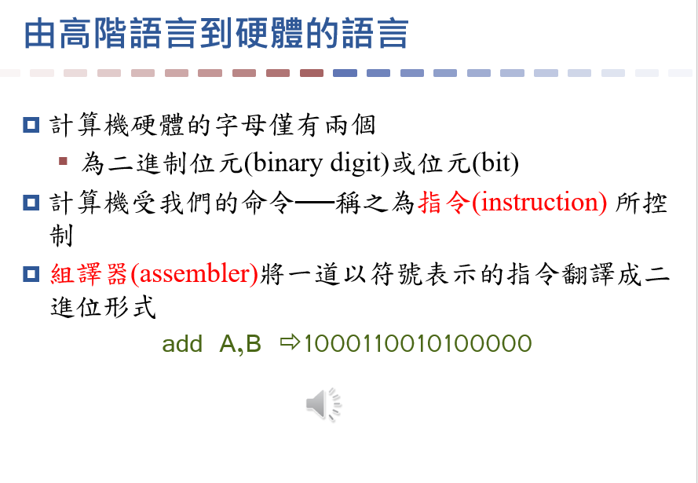
講解
這張圖在講什麼
這張投影片在回答一個核心問題：
人類寫的程式，最後怎麼變成 CPU 看得懂的東西？
它在講的是一條由上而下的轉換路徑：
高階語言(High-level language) → 組合語言(Assembly language) → 機器語言(Machine code) → 硬體執行
你可以把它想成：
- 高階語言：像人話，比較好寫
- 組合語言(Assembly language)：比較接近 CPU 指令的「助記符號」
- 機器語言(Machine code)：CPU 真正直接讀的 0 和 1
這頁的重點是：硬體最後只吃 bit(位元)，所以不管前面寫得多漂亮，最後都要變成二進位。(維基百科)
逐句解釋投影片內容
1.「計算機硬體的字母僅有兩個」
投影片寫的是：
- 二進制位元(binary digit) 或位元(bit)
意思是： 電腦硬體底層通常只用兩種狀態表示資訊，例如：
- 高電壓 / 低電壓
- 有電 / 沒電
- 1 / 0
所以才會說電腦的「字母」只有兩個：0 和 1。
你可以把它想成開關：
- 開 = 1
- 關 = 0
很多個 bit 排在一起，就能表示數字、字母、圖片、指令。
2.「計算機受我們的命令——稱之為指令(instruction)所控制」
這句的意思是：
CPU 不會「理解我們的想法」，它只會執行一條一條很明確的指令(instruction)。
例如很抽象地說，可能有這類指令：
- 加法 add
- 搬移資料 move / load / store
- 跳躍 jump
- 比較 compare
也就是說，電腦做事不是靠「理解語意」，而是靠一串格式固定的指令。 這和我們平常講自然語言非常不一樣。
3.「組譯器(assembler)將一道以符號表示的指令翻譯成二進位形式」
這句是整張圖最重要的地方，但也最容易混淆。
先分清楚兩個名詞：
- Assembly language(組合語言)：像
add A, B這種人比較看得懂的符號式寫法 - Assembler(組譯器)：負責把組合語言翻成機器碼的工具程式
也就是說：
add A, B不是 assembler- 它是 assembly language
- 真正做翻譯的是 assembler
這點要特別修正一下，因為很多初學者會把兩者混在一起。 根據資料，assembly language 是與特定 CPU 架構高度對應的低階語言，而 assembler 是把這些 mnemonic(助記符) 轉成 machine code(機器碼) 的程式。(維基百科)
add A,B -> 1000110010100000 這一行怎麼看
這行是在表達：
「人看的符號指令」可以被翻成「CPU 看得懂的 bit 串」
但這裡要注意一件事：
這不是普世固定寫法
add A, B 對不同 ISA(Instruction Set Architecture，指令集架構) 可能會有不同編碼。
也就是說：
- x86 的編碼方式可能不同
- ARM 的編碼方式可能不同
- MIPS 的編碼方式也可能不同
所以這個 1000110010100000 比較像是示意圖，用來表達「組合語言最後會被編成二進位」這件事， 不是所有 CPU 都一定這樣編。(維基百科)
我們可以怎麼理解這整個流程
用一個生活化比喻：
你對餐廳下單：
- 你說：「我要一份牛肉麵，不要香菜。」 這像高階語言(High-level language)
- 店員把它整理成內部簡寫單號 這像組合語言(Assembly language)
- 廚房機器只認特定代碼，例如餐點編號、加料旗標 這像機器語言(Machine code)
所以中間需要一個「翻譯角色」，把比較好懂的表示法，轉成最底層可執行的格式。
這張圖和你這門課的脈絡有什麼關係
這頁其實是在替後面很多章節打地基。
因為你之後學到的東西，例如：
- instruction format(指令格式)
- opcode(操作碼)
- register(暫存器)
- machine cycle(機器週期)
- decode(解碼)
- control unit(控制單元)
都和這件事直接有關：
CPU 其實就是在處理一串被編碼過的指令。
前面你學「由高階語言到硬體語言」，是先建立觀念： 我們平常寫的東西，最後會被壓成 CPU 可執行的 bit 模式。
你可以怎麼記
記一句就夠了：
人寫符號，工具負責翻譯，CPU只吃0和1。
再補一句更完整的版本：
Assembly language(組合語言) 是符號化的低階指令；Assembler(組譯器) 會把它轉成 Machine code(機器碼)。
這張圖裡最容易考的點
容易考 1：bit 是什麼
bit = binary digit(二進位數位) = 最小資訊單位
容易考 2：instruction 是什麼
instruction(指令) = CPU 執行動作的命令
容易考 3：assembler 是做什麼
assembler(組譯器) = 把 assembly language(組合語言) 轉成 machine code(機器碼)
容易考 4：CPU 能不能直接看懂 add A, B
不能。 CPU 直接理解的是 machine code(機器碼)，不是人類寫的文字助記符。
幫你補一個更精確的版本
這頁如果要寫得更嚴謹，可以改成：
- 計算機硬體底層以 bit(位元) 表示資訊
- CPU 依照 instruction(指令) 運作
- Assembly language(組合語言) 使用 mnemonic(助記符) 表示指令
- Assembler(組譯器) 將 assembly language 轉換成 machine code(機器碼)
這樣概念會更準。
用圖整理
flowchart TB
A[High-level language\<br>高階語言] --> B[Assembly language\<br>組合語言]
B --> C[Assembler\<br>組譯器]
C --> D[Machine code\<br>機器碼 0/1]
D --> E[CPU 執行]
一句總結
這張圖要你記住的不是某一串二進位，而是：
程式要讓硬體執行，最後一定要被翻成 machine code(機器碼)；assembler(組譯器) 就是在做這件事。
這頁對應到你上傳教材中「由高階語言到硬體的語言」的主題。
下一步我們可以接著講：為什麼 CPU 不能直接執行高階語言，而一定要先變成組合語言／機器語言？
組譯器(assembler)和編譯器一樣嗎
不一樣，但兩者都是翻譯程式。
最簡單的分法是：
- Assembler(組譯器)：把 Assembly language(組合語言) 轉成 Machine code(機器碼)
- Compiler(編譯器)：把 High-level language(高階語言)，例如 C、C++、Rust，轉成較低階的表示，通常最後也會變成機器碼或目標碼(object code) (維基百科)
你可以把它想成什麼？
像翻譯文件：
- 組合語言本來就已經很接近 CPU 的語言
- 高階語言離硬體比較遠，比較像人寫給人的語言
所以：
- Assembler 做的是「比較直接的對照翻譯」
- Compiler 做的是「比較複雜的轉換與分析」
為什麼不一樣？
因為 Assembly language(組合語言) 和機器指令通常有很強的對應關係，常常接近 1 對 1。 例如一個 mnemonic(助記符) 指令，會對應到某個 opcode(操作碼) 編碼。Assembler 還會幫你做像是符號位址解析、常數計算、macro(巨集) 展開這些工作。(維基百科)
但 Compiler(編譯器) 面對的是像 C、C++ 這種高階語言。它不只是「逐字翻譯」，還要處理：
- 語法分析(syntax analysis)
- 型別檢查(type checking)
- 最佳化(optimization)
- 產生目標碼(code generation)
所以 compiler 通常比 assembler 複雜很多。(維基百科)
一個具體例子
假設你寫：
a = b + c;
這是高階語言。 Compiler(編譯器) 可能先把它轉成某種中間表示，再決定要不要放進 register(暫存器)、怎麼排指令、要不要做最佳化，最後才產生接近：
MOV R1, b
ADD R1, c
MOV a, R1
然後這些 assembly code(組合語言程式碼)，再交給 Assembler(組譯器) 轉成真正的二進位機器碼。這也就是為什麼在很多工具鏈(toolchain) 中，兩者會連在一起用。(維基百科)
容易混淆的地方
有時候你會覺得它們「很像」，因為兩者最後都在幫你把程式變成機器可執行的東西。這個感覺不算錯。 但在計算機結構或系統課裡，我們通常會明確區分：
- Compiler 處理高階語言
- Assembler 處理組合語言
所以考試如果問「組譯器和編譯器一樣嗎」，
答案是：
❌ 不一樣 但它們都屬於把程式往機器可執行形式轉換的翻譯工具。(維基百科)
一張圖記起來
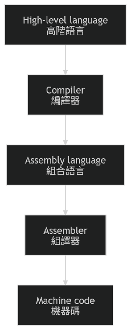
要更精確一點，現代編譯器有時不一定會真的輸出 assembly file(組合語言檔)，也可能直接產生 object code(目的碼)，但概念上仍然是：
compiler 負責把高階語言往低階轉，assembler 負責把組合語言變成機器碼。 (維基百科)
一句話記憶法
Compiler(編譯器) 處理「比較像人話」的程式；Assembler(組譯器) 處理「已經很像 CPU 話」的程式。
你這裡如果要應付課堂或考試，可以直接寫：
組譯器與編譯器不相同。組譯器是將組合語言翻譯成機器語言；編譯器則是將高階語言翻譯成低階語言或機器語言。 (維基百科)
下一步最適合接著講的是：那 Interpreter(直譯器) 又和 Compiler(編譯器) 差在哪裡？
把 assembly language(組合語言) 轉成 machine code(機器碼)是不是就是 decode
不是。把 assembly language(組合語言) 轉成 machine code(機器碼)，通常叫做 assemble / assembly(組譯)； decode(解碼) 是 CPU 在執行機器碼時，分析這串 bit 代表什麼操作。(維基百科)
先直接分清楚
1. Assembler(組譯器)在做什麼
Assembler 的工作是：
- 輸入：
ADD R1, R2 - 輸出：對應的 machine code(機器碼) bit pattern
也就是把人可讀的組合語言助記符(mnemonic)，轉成CPU 可儲存與執行的二進位編碼。這件事叫 assembling(組譯)，不是 decode。(維基百科)
2. Decode(解碼)在做什麼
Decode 是 CPU 內部 instruction cycle(指令週期) 的一部分。 CPU 先從記憶體 fetch(取指)，拿到一串 machine code 之後，在 decode 階段把它拆解成：
- 這是哪一種指令
- opcode(操作碼) 是什麼
- operand(運算元) 在哪裡
- 要控制哪些電路、暫存器、ALU
也就是說，decode 是把已經是 machine code 的 bit，轉成控制訊號(control signals) 讓硬體真的去做事。(維基百科)
你可以把兩者想成兩個完全不同的時機
組譯 assemble
發生在程式被建立的時候
- 你寫 assembly code
- assembler 幫你翻成 machine code
- 產生可執行檔或目標檔的一部分
解碼 decode
發生在CPU 正在執行程式的時候
- CPU 從記憶體抓到 machine code
- CPU 內部的 decoder(解碼器) 看懂這條指令要做什麼
- 然後發控制訊號給硬體
所以兩者差很多：
- assemble：把文字指令翻成位元
- decode：把位元指令解讀成硬體動作
一個生活化例子
像你去餐廳：
Assembler 像什麼？
你寫菜單代號：
- 「牛肉麵加蛋」
內部系統把它轉成：
A17-X2
這像 assembler：把較好懂的表示法，轉成機器內部用的代碼。
Decode 像什麼？
廚房拿到 A17-X2 之後：
- 看懂 A17 是牛肉麵
- X2 是加蛋
- 然後通知不同工作站開始動作
這像 decode：不是在翻譯成另一種檔案格式，而是在理解代碼、啟動執行流程。
你最容易混淆的點
你現在的想法其實很合理，因為兩者看起來都像「把一個東西變成另一個東西」。
但關鍵差在：
- Assembler 處理的是「符號文字」到「機器碼」
- Decoder 處理的是「機器碼」到「控制意義」
所以不可以把它們當同一件事。
一張圖看懂
flowchart TB
A[Assembly language\<br>組合語言] --> B[Assembler\<br>組譯器]
B --> C[Machine code\<br>機器碼]
C --> D[CPU fetch\<br>取指]
D --> E[CPU decode\<br>解碼]
E --> F[Control signals\<br>控制訊號]
F --> G[Execute\<br>執行]
你在課堂上可以怎麼講
你可以這樣回答老師或寫筆記：
將 assembly language(組合語言) 轉成 machine code(機器碼) 稱為 assembling(組譯)，是由 assembler(組譯器) 完成；decode(解碼) 則是 CPU 在執行時，將已取出的 machine code 解釋為具體操作與控制訊號的過程。(維基百科)
一句記憶法
組譯是「翻成機器碼」；解碼是「看懂機器碼」。
接下來最適合的是我幫你把 compile(編譯) / assemble(組譯) / decode(解碼) 三個詞一起做成對照表。
由高階語言到硬體語言-2
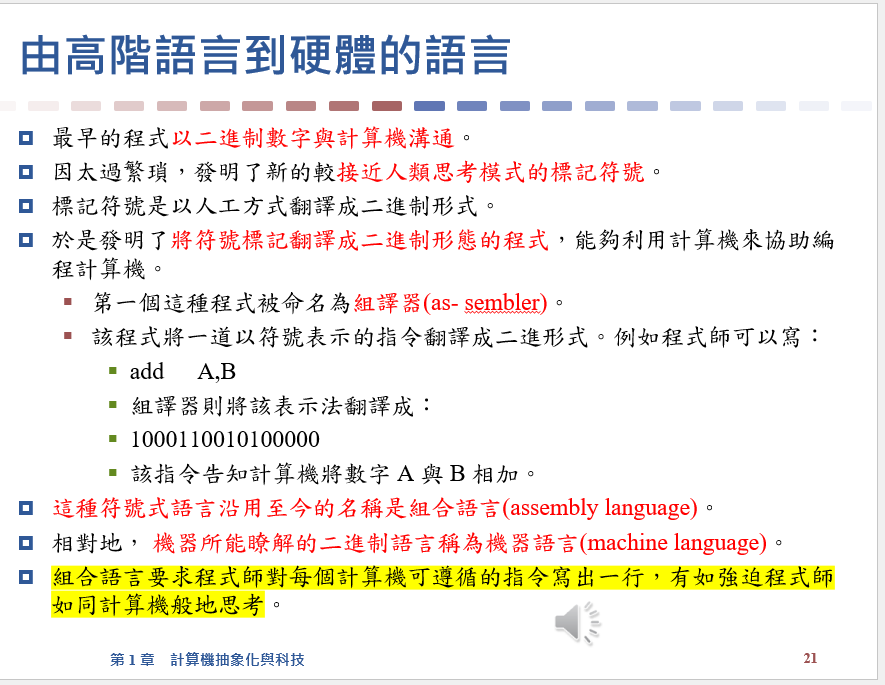
講解
這張投影片在回答的核心問題是：
為什麼還需要「組合語言」？
因為電腦真正看得懂的是 machine language(機器語言)，也就是 0 和 1；但人直接寫一長串 010101… 太難讀、太難記、太容易出錯，所以才發明 assembly language(組合語言)，用比較像縮寫口令的方式來代表機器指令，再交給 assembler(組譯器) 翻成機器語言。這正是投影片想表達的主線。 (Stack Overflow)
先用一句話抓重點
你可以把它記成：
高階語言 → 組合語言 → 機器語言 → CPU執行
不過要更精確一點地說，現代實務上通常是：
高階語言 → compiler(編譯器) / interpreter(直譯器) / VM流程 → machine code(機器碼) 而 assembly language(組合語言) 是其中一種非常接近硬體的文字表示法，不是所有程式都一定先明文變成組合語言再往下走。
這張圖每一點在說什麼
1. 最早的程式以二進制數字與計算機溝通
這句大方向是對的。
意思是最底層硬體只認得 binary(二進位)，例如：
- 0001
- 1010
- 11001100
對 CPU 來說，這些 bit pattern(位元模式) 才是真正的指令與資料形式。(Stack Overflow)
生活化地想：
你跟外國人溝通，但他只聽得懂某種極度死板的暗號格式；你如果直接背暗號，會非常痛苦。
2. 因太過繁瑣，發明了較接近人類思考模式的符號形式
這句也對。
所謂「較接近人類思考」，不是說它像自然語言那麼好懂，而是它至少把：
- 指令名稱
- 暫存器名稱
- 標籤(label，位址代號)
改成可讀的文字。
例如原本你可能要記一串機器碼，現在可以寫成：
add A, B
這樣人一看就知道大意是「把 A 和 B 做加法」。(Stack Overflow)
3. 標記符號足以人工方式翻譯成二進制形式
這句的意思是：
assembly language(組合語言) 和 machine language(機器語言) 的對應通常很接近，很多指令幾乎就是一對一映射。
也就是說：
ADDMOVJMP
這些 mnemonic(助憶符號) 背後都能對應到特定 opcode(操作碼)。(Stack Overflow)
不過這裡有一個小地方要修正：
「人工方式翻譯」在歷史上可以這樣理解，但現代實際上幾乎都是 assembler(組譯器) 自動翻譯。 人可以理解規則，但不會真的手工把整個大型程式逐位轉成 0/1。
4. 將符號翻譯成二進制形式的程式，稱為組譯器
這句是正確的。
assembler(組譯器) 的工作就是把像這樣的文字：
add A, B
翻成對應的 machine code(機器碼)。(Stack Overflow)
你可以把 assembler 想成：
「把人類可讀的低階文字，轉成 CPU 真正吃得下去的位元格式的翻譯機」。
5. 這種符號式語言沿用至今的名稱就是組合語言
這句也是對的。
assembly language(組合語言) 本質上就是：
machine language(機器語言) 的可讀文字版本，通常和特定 CPU architecture(處理器架構) 綁得很深，例如 x86、ARM、RISC-V。(Stack Overflow)
這點很重要，你可以記：
- C / Python：比較偏「寫給人」
- Assembly：比較偏「寫給硬體」
- Machine code：真正「給 CPU 直接執行」
圖中黃色重點句要怎麼理解
投影片黃色那句大意是：
組合語言要求程式師對每個計算機可運作的指令寫一行，所以強迫程式師如同計算機般地思考。
這句的核心意思是對的，但表達有點粗，可以更精確地改成：
組合語言通常要求程式設計者直接控制每一步硬體層級操作，因此必須以 CPU 的執行模型來思考。
也就是你要自己管很多細節，例如：
- 資料放哪個 register(暫存器)
- 何時 load/store(載入/儲存)
- 如何 jump/branch(跳躍/分支)
- 呼叫函式時怎麼保存狀態
所以它比高階語言更接近硬體。這也是很多人說「寫 assembly 像在直接跟 CPU 對話」的原因。Stack Overflow 上也提到，assembly 的價值之一就是讓人能更直接分析與控制 machine code。(Stack Overflow)
你最容易混淆的三個名詞
machine language(機器語言)
CPU 真正執行的 0/1 指令格式。
assembly language(組合語言)
用文字助憶符號表示這些底層指令，例如 MOV、ADD、JMP。
assembler(組譯器)
把組合語言翻成機器語言的工具。
可以記成：
- machine language = 最底層實際內容
- assembly language = 人看的寫法
- assembler = 翻譯工具
一個簡單例子
假設你想做：
C = A + B
在高階語言可能寫成：
C = A + B;
在組合語言可能像：
MOV R1, A
ADD R1, B
MOV C, R1
意思是：
- 把 A 放進暫存器 R1
- 把 B 加到 R1
- 再把結果存回 C
你會發現：
高階語言只寫「我要什麼結果」； 組合語言要寫「每一步怎麼搬、怎麼算」。
這就是「像計算機一樣思考」的意思。
這張投影片有沒有不夠精確的地方？
有，主要兩點。
第一點：不是所有高階語言都一定先變成組合語言
投影片看起來容易讓人誤會成固定流程一定是：
高階語言 → 組合語言 → 機器語言
但更精確地說，compiler(編譯器) 有時會輸出 assembly，也有時直接輸出 object code(目的碼) / machine code，不一定會把組合語言當成中間產物。這點在社群討論也有提到。(Stack Overflow)
第二點：組合語言不一定完全一行對一條機器指令
初學時通常可以這樣理解，但嚴格說不一定絕對。因為有些 assembler directives(組譯指示)、macro(巨集) 不會直接對應單一機器指令。
不過在課堂入門階段，先把它理解成「大致一對一」是可以的。
你在課程裡應該怎麼記
核心記憶版
- CPU只懂 machine language(機器語言)
- 人寫 machine language 太痛苦
- 所以用 assembly language(組合語言) 來寫
- assembler(組譯器) 再把它翻成機器語言
這張圖和整門課的關係
這張圖其實是在幫你建立一個很重要的課程脈絡：
軟體最後一定要落到硬體可執行的形式。
後面你學到：
- instruction(指令)
- opcode(操作碼)
- register(暫存器)
- control unit(控制單元)
- machine cycle(機器週期)
都會和這張圖接起來。
因為組合語言其實就是最靠近這些硬體結構的程式表示法。
一句總結
這張投影片要你記住的不是「歷史故事」而已，而是：
組合語言是人類和硬體之間的低階橋樑；它比機器語言好讀，但仍然非常接近 CPU 真正執行的指令。 (Stack Overflow)
你如果要，我下一步可以直接幫你把這張圖整理成「考試版重點」或「白話版逐句翻譯」。
由高階語言到硬體語言-3
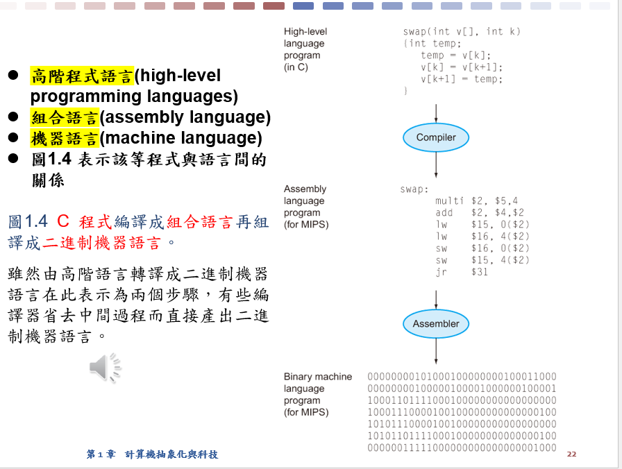
講解
這張圖是在回答一個很核心的問題：
人類寫的程式，為什麼最後能變成 CPU 看得懂的東西？
答案就是：要經過翻譯。
這張圖把翻譯流程畫成三層：
-
High-level programming language(高階程式語言) 例如 C 這是人比較容易寫、比較容易看懂的語言。
-
Assembly language(組合語言) 這是比較接近硬體、接近 CPU 指令的文字表示法。 人還能勉強讀，但已經很低階了。
-
Machine language(機器語言) 也就是 0 和 1 的二進位，這才是 CPU 真正直接執行的形式。圖中也明確寫成「C 程式 編譯成組合語言 再組譯成二進制機器語言」。
圖右邊每一段在做什麼
右上角是一段 C 程式，大意是交換兩個陣列元素：
swap(int v[], int k) {
int temp;
temp = v[k];
v[k] = v[k+1];
v[k+1] = temp;
}
這是 高階語言 C，重點是「容易讓人表達邏輯」。
接著往下：
Compiler(編譯器)
Compiler(編譯器)會把 C 這種高階語言，轉成 Assembly language(組合語言)。 圖中間那段像：
slladdlwswjr
這些就是 MIPS 組合語言 指令。 也就是說，原本你寫的是「交換陣列元素」這種人類語意，到了這一步，已經被拆成很多個很細的動作，例如：
- 算出位址
- 從記憶體讀資料
- 暫存資料
- 把資料寫回去
- 返回呼叫者
這就是為什麼我們常說：
高階語言是一句「想做什麼」 組合語言是一條一條「實際怎麼做」
Assembler(組譯器)
Assembler(組譯器)再把組合語言轉成 Binary machine language(二進位機器語言)。 圖最下面那一串：
000000…
100011…
101011…
這些 0 和 1 才是硬體電路真正吃進去的內容。 Assembly language 與 machine code 之間通常有很強的對應關係；assembler 的工作就是把像 lw、sw 這種符號指令，轉成目標架構可執行的位元編碼。(維基百科)
你可以怎麼記這張圖
可以把它想成「翻譯三層」：
- C：人類語言層
- Assembly：工程師和硬體之間的中間層
- Machine code：CPU 的母語
很像這樣：
- 你腦中想法：我要把兩杯飲料交換位置
- 給店員的描述：把左邊那杯拿起來，先放旁邊，再把右邊移過來，最後把剛剛那杯放到右邊
- 最後機器手臂收到的是一連串最底層的控制訊號
flowchart TB
A\["High-level language\<br\>C 程式"\] \--\> B\["Compiler\<br\>編譯器"\]
B \--\> C\["Assembly language\<br\>組合語言"\]
C \--\> D\["Assembler\<br\>組譯器"\]
D \--\> E\["Machine language\<br\>二進位機器語言"\]
為什麼不直接從 C 變成 0 和 1？
你這樣想最容易懂：
Compiler(編譯器) 負責「理解程式邏輯並產生目標架構指令」 Assembler(組譯器) 負責「把文字形式的組合語言轉成實際位元編碼」
分兩步做有幾個好處：
-
比較容易設計工具鏈(toolchain，工具鏈) 編譯器專心處理語意、最佳化。 組譯器專心處理指令編碼。
-
方便除錯與教學 我們可以先看編譯後的 assembly，知道高階程式到底被翻成什麼。
-
方便最佳化 編譯器可以在輸出 assembly 前後做很多最佳化。
實務上，有些編譯器流程對使用者來看像是「直接產生機器碼」，但概念上仍可拆成： compile(編譯) → assemble(組譯) → link(連結)。像 GCC 官方文件就把 -S 視為產生 assembly、-c 視為編譯並組譯但不連結。(gcc.gnu.org)
這張圖最重要的考點
你大概可以整理成這 4 句：
- 高階語言給人寫，較容易理解。
- 組合語言較接近硬體，使用助記符號(mnemonic，助記碼)表示指令。
- 編譯器 Compiler：把高階語言轉成組合語言。
- 組譯器 Assembler：把組合語言轉成二進位機器語言。
容易混淆的地方
1. 解碼(decode，解碼)不是把人類語言變機器語言
不是。 你前面問過這個，這裡要特別修正：
- 編譯 / 組譯：是把程式翻譯成 CPU 可執行格式
- 解碼 decode：是 CPU 在執行指令時，讀到某個 machine instruction(機器指令) 後，判斷「這條指令要做什麼」
也就是說：
- 寫程式時：C → Assembly → Machine code
- CPU 執行時：Fetch(擷取) → Decode(解碼) → Execute(執行)
這是兩個不同層次的事情。
2. 組合語言不是 CPU 直接執行的最終形式
CPU 直接吃的是 machine code(機器碼)，不是你看到的 lw, sw, add 這些文字。 這些文字只是方便人閱讀的符號表示。
跟這門課的脈絡有什麼關係
這張圖其實是在幫後面很多章節鋪路：
- 你之後學 instruction(指令) 時，會知道組合語言每一條對應什麼硬體動作
- 學 CPU datapath(資料路徑) 時，會知道 machine instruction 為何長那樣
- 學 control unit(控制單元) 時，會知道 decode 到底在解什麼
- 學 pipeline(管線化) 時，會看到這些機器指令如何一階段一階段被處理
所以這張圖不是只是在講「翻譯」，它其實是在建立：
軟體怎麼一路往下，最後碰到硬體
你可以直接背的版本
一句話版
高階語言先經過 Compiler(編譯器) 變成 Assembly language(組合語言)，再經過 Assembler(組譯器) 變成 Machine language(機器語言)，最後才能由 CPU 執行。
考試版
- C 屬於 high-level language(高階語言)
- 組合語言使用助記符號表示機器指令
- Compiler 負責高階語言到組合語言
- Assembler 負責組合語言到機器語言
自問自答幫你釐清
Q：那組合語言是不是比較像 CPU 的語言？ 對，但還不是 CPU 最終直接吃的位元形式。
Q：那 CPU 看得懂 C 嗎？ 看不懂。CPU 只看得懂 machine language(機器語言)。
Q：那為什麼我們不直接寫機器語言？ 因為太難寫、太難讀、太容易錯，所以才有 assembly，再往上才有 C 這些高階語言。
這張圖的重點總結
這張圖想傳達的核心只有一句：
程式越往下層，越接近硬體；越往上層，越接近人類思考方式。
你這張投影片本身可參考句尾檔案：
⭐ 下一步我可以幫你做一件很有用的事：把右邊那段 swap 的 C、MIPS 組合語言、機器語言，逐行一一對照講解。
Q：所以以前為了解決機器於語言太難，有了組合語言，但是組合語言也很難，有了高階程式語言。這樣說可以嗎
可以，但要稍微修正，這樣會更準確：
比較準確的說法
一開始因為 machine language(機器語言) 幾乎全是 0 和 1，太難寫、太難讀、太容易出錯，所以發展出 assembly language(組合語言)；但組合語言仍然很接近硬體、可攜性(portability，可移植性) 也差，寫大型程式很辛苦，因此後來又發展出 high-level programming languages(高階程式語言)。 (Encyclopedia Britannica)
你的原句哪裡需要修正
你原本說：
以前為了解決機器語言太難，有了組合語言，但是組合語言也很難，有了高階程式語言。
這個方向是對的，概念上基本正確。 但有兩個地方我們可以講得更精準：
1. 不是單純「難」，而是「難讀、難寫、難維護」
machine language(機器語言) 最大問題不只是難，而是它直接用二進位表示 CPU 指令，對人非常不友善。assembly language(組合語言) 用 mnemonic(助記碼) 取代純 0/1，確實大幅改善可讀性。(維基百科)
2. 高階語言不只是因為組合語言「很難」
還有另外幾個重要原因：
- 太接近硬體，程式要自己管很多細節
- 不同 CPU 架構的 assembly language(組合語言) 差很多，移植很麻煩
- 寫大型程式效率低，維護成本高
- 所以需要更抽象(abstraction，抽象化) 的語言來提升開發效率 (Encyclopedia Britannica)
你可以直接背的版本
簡短版
因為 machine language(機器語言) 太難讓人直接使用，所以發展出 assembly language(組合語言)；但組合語言仍然偏低階、難以開發大型程式，因此又發展出 high-level programming languages(高階程式語言)。 (Encyclopedia Britannica)
更口語版
就是人類先受不了直接寫 0 和 1，所以發明組合語言；後來又發現組合語言還是太貼近硬體，寫程式很累，所以才有 C、Fortran 這類高階語言。 最早的程式語言接近 assembly，而到了 1950 年代中期開始出現高階語言；IBM 也把 Fortran 描述為早期極具影響力的高階語言。(Encyclopedia Britannica)
用生活化例子理解
可以把它想成三個層次：
- machine language(機器語言)：像你直接對機器輸入一長串開關訊號
- assembly language(組合語言)：像把那些開關訊號改成簡短代號
- high-level language(高階語言)：像直接用比較接近人類邏輯的句子描述要做什麼
所以演進方向就是：
越往後的語言，通常越接近人類思考；越往前的語言，越接近硬體。 (Encyclopedia Britannica)
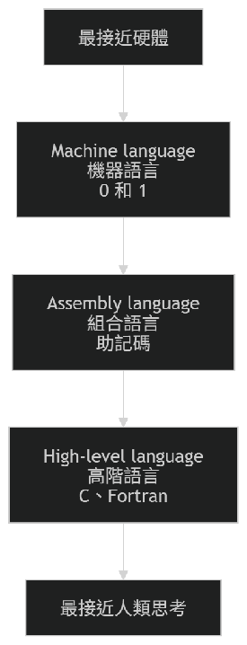
一個小補充
嚴格來說，不是說「組合語言不好」，而是：
- 它在需要精準控制硬體時很有價值
- 只是對一般軟體開發來說，成本太高
所以現代還是會用 assembly language(組合語言)，但通常只在很底層的地方，例如 kernel(核心)、driver(驅動程式)、embedded systems(嵌入式系統) 或效能關鍵區塊。這點在 x86 assembly 的介紹中也有提到。(維基百科)
結論
✅ 你這樣說大方向是對的。 更好的版本是：
為了改善 machine language(機器語言) 難寫難讀的問題，發展出 assembly language(組合語言)；但組合語言仍然太低階、太依賴硬體，不利於大型程式開發，所以又發展出 high-level programming languages(高階程式語言)。 (Encyclopedia Britannica)
接下來我們可以順著這句話，繼續講「高階語言、組合語言、機器語言三者各自的優缺點對照表」。
中央處理器單元
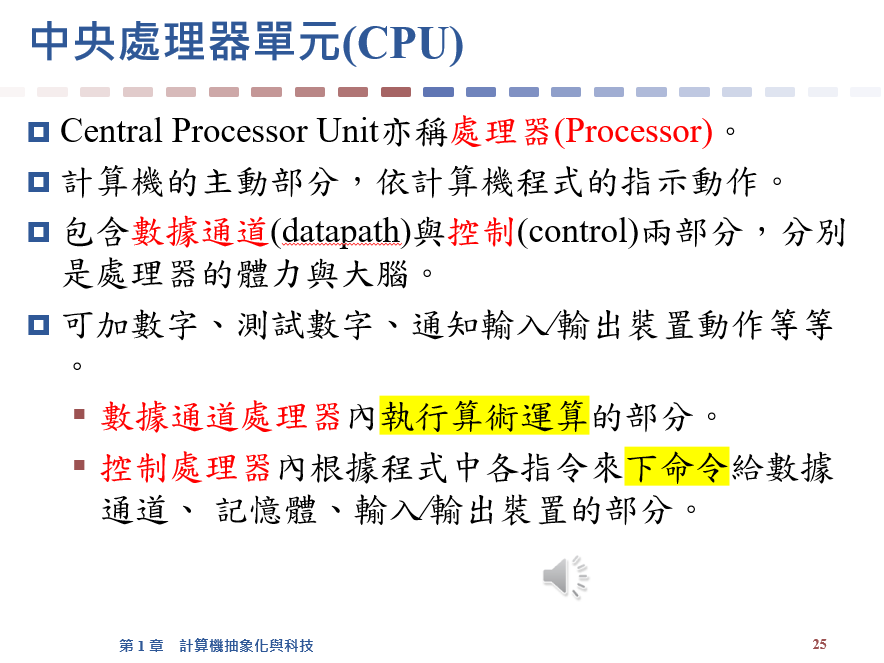
講解
這張投影片在講的是：CPU 不是一個單一黑盒子，而是可以粗分成兩大部分：datapath(數據通道) 與 control(控制)。這個切法和電腦組織課常見的說法一致：CPU負責執行程式指令，裡面一部分真的「做資料運算」，另一部分則「決定現在要做什麼、叫誰做」。 (維基百科)
這張圖在回答什麼？
它其實在回答一個很核心的問題：
CPU 到底怎麼工作？
答案不是「CPU 自己就會算」，而是：
- datapath(數據通道) 負責搬資料、存資料、算資料
- control(控制單元／控制路徑) 負責發控制訊號，指揮 datapath、記憶體、輸入輸出裝置何時做什麼事
你可以把它想成：
- datapath 像工廠裡真正動手加工的設備
- control 像工廠主管，負責下命令、排流程、決定下一步
所以投影片寫「分別是處理器的體力與大腦」，這個比喻是合理的。 (GeeksforGeeks)
先講整張圖的每一句
1. CPU 稱為處理器 Processor
這句是在講名詞對應。
- CPU = Central Processing Unit(中央處理單元)
- 也常叫 processor(處理器)
意思是它是電腦裡主要執行指令的核心元件。 (維基百科)
2. 計算機的主動部分，依計算機程式的指示動作
這句很重要。
CPU 不會自己亂做事，它是按照program(程式) 裡的 instruction(指令) 做事。 例如程式寫：
- 讀取一個數字
- 加 1
- 顯示結果
CPU 就會一條一條執行。
所以 CPU 的本質不是「會思考」，而是依照指令順序運作的執行者。
3. 包含數據通道(datapath)與控制(control)兩部分
這是這頁最重要的主題。
datapath(數據通道) 是什麼？
datapath 是 CPU 裡面真正處理資料流動與運算的部分，常包含：
- ALU(Arithmetic Logic Unit，算術邏輯單元)：加減乘除、AND、OR、比較
- registers(暫存器)：暫時放資料
- buses / multiplexers：在各元件之間搬資料、選路徑
簡單說：
datapath = 資料在哪裡、怎麼流、怎麼算
也就是投影片下面那句：
數據通道處理器內執行算術運算的部分
這句方向是對的，但更精確一點說，datapath 不只算術運算，還包含邏輯運算、資料搬移、暫存器寫入讀出等。所以如果考試或正式表述，我們最好說得完整一些。 (GeeksforGeeks)
control(控制單元) 是什麼？
control unit 會根據目前指令，產生 control signals(控制訊號)，去告訴其他部分：
- 這次 ALU 要做加法還是減法
- 哪個暫存器要讀
- 哪個暫存器要寫
- 要不要讀記憶體
- 要不要寫記憶體
- 程式計數器 PC 要不要跳轉
所以投影片下面那句：
控制處理器內根據程式中各指令來下命令給數據通道、記憶體、輸入輸出裝置的部分
這句基本上就是 control unit 的核心意思。 (GeeksforGeeks)
用一個生活化例子理解
假設我們要做這條指令：
R1 = R2 + R3
也就是把暫存器 R2 和 R3 的值相加，結果放進 R1。
那 CPU 內部大概會發生這種事：
datapath 在做的事
- 從 R2 取值
- 從 R3 取值
- 把兩個值送進 ALU
- ALU 做加法
- 把結果寫回 R1
control 在做的事
- 告訴 datapath：「現在要選 R2、R3 當輸入」
- 告訴 ALU：「這次運算類型是 ADD(加法)」
- 告訴 R1：「現在允許寫入」
- 告訴其他單元：「這拍不要做記憶體寫入」
所以：
- datapath 負責做
- control 負責指揮做
這就是兩者最直白的差別。
為什麼課本喜歡把 CPU 切成這兩塊？
因為這樣會很容易分析 CPU 的設計。
例如我們之後學：
- single-cycle datapath(單週期資料路徑)
- multi-cycle datapath(多週期資料路徑)
- pipeline(管線化)
本質上都在討論：
- datapath 怎麼接
- control 怎麼發信號配合
也就是說，這張投影片其實是在幫後面的章節鋪路。
這頁有沒有哪裡需要更精確？
有，這裡我幫你修正成課堂上更穩的說法。
原圖說「datapath 是執行算術運算的部分」
這句 不夠完整。
更精確應該說：
datapath 是 CPU 中負責資料傳送、暫存、算術運算與邏輯運算的硬體路徑。
因為 datapath 不只做算術，還會：
- 搬資料
- 做邏輯判斷
- 跟暫存器互動
原圖說「control 下命令」
這句是對的，但最好補一句：
control unit 會根據 instruction opcode(操作碼) 與目前狀態，產生控制訊號(control signals)。
這樣就更像正式課本語言。
和你之前學過的內容怎麼接起來？
你前面有學過：
- IR(Instruction Register，指令暫存器)
- PC(Program Counter，程式計數器)
- AR / MAR(Address Register / Memory Address Register，位址暫存器)
- FR(Flag Register，旗標暫存器)
- ALU
這些就可以放回這張圖裡理解：
屬於 datapath 的常見元件
- ALU
- Registers(各種暫存器)
- Bus / MUX
- 有時也把 PC、IR 視為 datapath 中的一部分
屬於 control 的功能
- 解碼 instruction
- 產生控制訊號
- 決定 PC 是否加一或跳躍
- 決定何時讀寫暫存器或記憶體
所以不是「CPU = ALU」而已， 而是：
CPU = datapath + control
你可以怎麼記？
我建議你記一句最短版：
- datapath 負責做資料處理
- control 負責發控制訊號
再進一步記成：
- datapath = 做事的人
- control = 指揮的人
我幫你整理成考試可寫版本
超短版
CPU 可分為 datapath(數據通道) 與 control unit(控制單元)。 datapath 負責資料的傳送、暫存與算術邏輯運算；control unit 則根據指令產生控制訊號，協調 datapath、記憶體與輸入輸出裝置的運作。 (GeeksforGeeks)
口語理解版
CPU 裡面有一部分真的在算資料，那是 datapath；另一部分負責看指令、下命令，那是 control。
用 mermaid 畫成結構圖
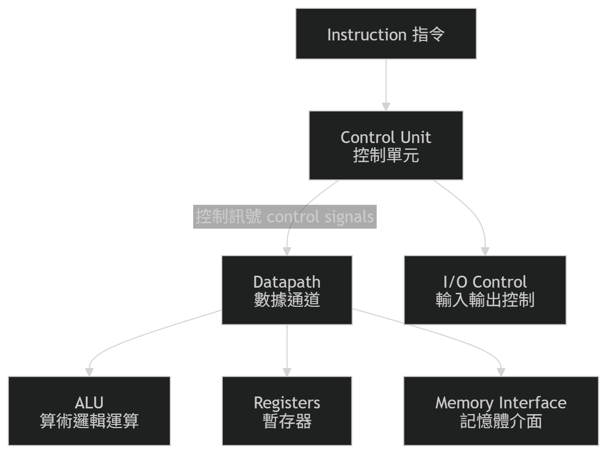
最後幫你抓這頁的核心考點
這頁最可能考的不是背整段，而是這三件事：
- CPU 又叫 Processor(處理器)
- CPU 可分成 datapath 與 control
- datapath 負責運算與資料流動，control 負責控制與協調
如果你要，我下一則我可以直接幫你把這張圖延伸成：
「datapath、control、ALU、register、PC、IR 彼此關係圖」
讓你一次把整個 CPU 內部架構串起來。
Q：除了控制單元，運算/邏輯單元和暫存器都叫做datapath(數據通道)嗎
可以，但要補一句：比較精確地說，ALU(運算邏輯單元)、registers(暫存器)、buses(匯流排)、multiplexers 多工器)、有時還包含部分 memory interface(記憶體介面)，這些合起來才叫 datapath(數據通道)；不是只有 ALU 和暫存器。datapath 一般是指「資料實際流動、被儲存、被運算的整條硬體路徑」，而 control unit(控制單元) 則負責發出 control signals(控制訊號) 去指揮這些元件怎麼動作。(GeeksforGeeks)
你這句話哪裡對，哪裡要修正
你說：
除了控制單元，運算/邏輯單元和暫存器都叫做 datapath(數據通道)嗎
這句有 一半對，一半不夠完整。
對的部分
ALU 和 registers 的確通常都被視為 datapath 的組成元件。
要修正的部分
它們不是各自單獨就叫 datapath，而是：
- ALU 是 datapath 的一部分
- registers 是 datapath 的一部分
- 整個資料傳送與運算路徑 才叫 datapath
就像：
- 廚房裡的瓦斯爐不是「整個廚房」
- 冰箱也不是「整個廚房」
- 但它們都是廚房的一部分
同理：
- ALU 不是 datapath 全部
- 暫存器也不是 datapath 全部
- 它們加上資料通路，合起來才是 datapath
最簡單的記法
你可以記成：
- control unit = 下命令的人
- datapath = 真正做資料處理的一整套硬體
而 datapath 裡面常見包含：
- ALU(算術邏輯單元)
- register file(暫存器組)
- bus(匯流排)
- MUX 多工器
- adder(加法器)
- 有時也會把和資料流直接相關的記憶體存取路徑一起畫進 datapath
為什麼不只 ALU 和暫存器？
因為 CPU 執行一條指令時，不是只有「算」而已，還要先把資料送到對的位置。
例如這條：
R1 = R2 + R3
實際上不只是 ALU 做加法，還包含：
- 從 R2 讀資料
- 從 R3 讀資料
- 經過某些資料路徑送進 ALU
- ALU 做加法
- 把結果送回 R1
所以除了 ALU 和 register，中間那條資料怎麼流的路徑 也很重要，這整套才是 datapath。
你可以這樣說，會比較標準
口語版
ALU 和暫存器都屬於 datapath，但 datapath 不只包含它們，還包含讓資料流動和選擇路徑的其他硬體。
考試版
Datapath(數據通道) 是 CPU 中負責資料傳送、暫存與算術邏輯運算的硬體集合，通常包含 ALU、registers、buses、multiplexers 等；control unit(控制單元) 則負責產生控制訊號，協調 datapath 的運作。(GeeksforGeeks)
一張小圖幫你分清楚
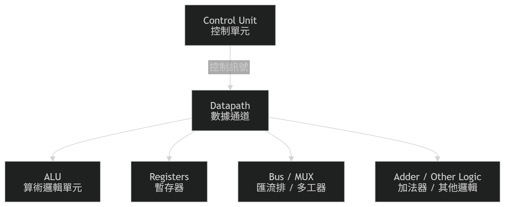
最後幫你下結論
你的理解可以改成這一句：
不是「ALU 和暫存器都叫 datapath」，而是「ALU 和暫存器都是 datapath 的組成部分」。
如果你要，我下一則可以直接幫你整理：
哪些元件算 control、哪些算 datapath、哪些在不同課本裡可能畫法不同。
動態存取記憶體
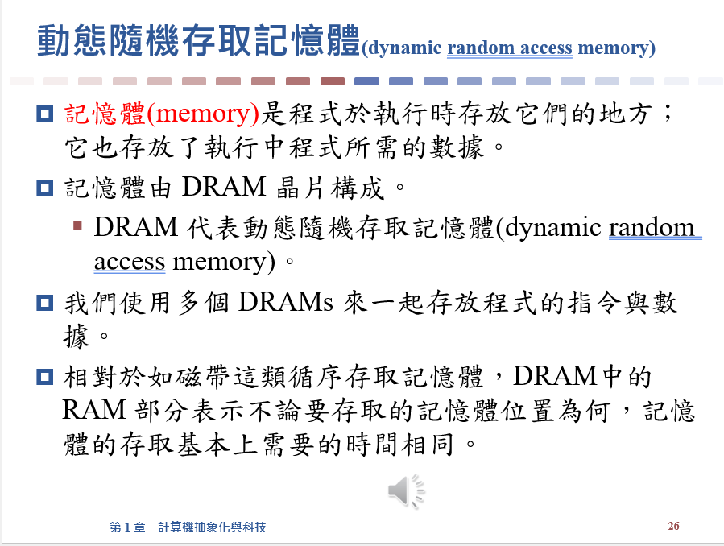
講解
這張投影片在講的是：
什麼是 DRAM(動態隨機存取記憶體)？
它是在回答一個很基本但很重要的問題：
電腦執行程式時，程式和資料暫時放在哪裡？ 答案就是：主記憶體(main memory)，而現在一般電腦的主記憶體主要就是 DRAM。投影片內容可在課程投影片中對照。
先看投影片每一句在說什麼
1. 記憶體(memory)是程式執行時存放它們的地方
這句話可以先理解成：
- 程式本來可能放在 SSD、硬碟
- 但 CPU 不會直接很有效率地從 SSD 慢慢執行程式
- 真正要跑程式時，會先把需要的程式碼和資料載入 主記憶體(main memory)
生活化比喻：
- SSD / 硬碟像倉庫
- DRAM 像你的書桌
- CPU 像正在做題目的人
你不會每做一步都跑去倉庫拿東西，而是先把需要的資料攤在桌上。
2. 記憶體由 DRAM 晶片構成
這裡的「記憶體」在這堂課通常是在指：
- 主記憶體(main memory)
- 我們平常插在主機板上的 RAM 模組
而這些模組內部，主要是由 DRAM chips 組成。這點和現代電腦的標準做法一致；DRAM 仍是主記憶體的主流技術。(TechTarget)
3. DRAM = Dynamic Random Access Memory
這個名詞可以拆成三段來記：
Dynamic(動態)
意思是：資料不是穩穩放著就好，要定期補電(refresh，重新整理)。
因為 DRAM 的每個 bit 通常是靠 電容(capacitor) 儲存電荷，電荷會慢慢漏掉，所以必須週期性 refresh，不然資料會消失。這也是它叫做 dynamic 的原因。(TechTarget)
Random Access(隨機存取)
意思是： 理論上可以直接指定任一個位址(address) 去讀寫，而不用像磁帶那樣從頭一路捲到目標位置。
也就是說：
- 要讀第 10 格，可以直接讀
- 要讀第 100000 格，也可以直接讀
- 不需要先經過前面所有資料
這就是「隨機存取」的核心概念。TechTarget 對 RAM 的描述也是處理器可以隨機存取任意儲存位置，而不是必須按順序取資料。(TechTarget)
Memory(記憶體)
就是拿來暫時存放正在使用的程式和資料。
4. 我們使用多個 DRAMs 一起存放程式指令與數據
這句是在說：
一條記憶體模組不是只有一個超大儲存格，而是由很多 DRAM cell / DRAM chips 一起組成。
原因很簡單：
- 一個 cell 只能存很少資料
- CPU 一次常常要讀很多 bit
- 所以需要很多顆一起配合，組成完整的記憶體模組
你可以把它想成：
不是只有一個大倉庫格子，而是很多小抽屜組成整個櫃子。
5. 為什麼叫 random access？
投影片最後一句在強調：
相對於磁帶這種 sequential access(循序存取) 裝置，DRAM 的存取不像磁帶那樣要依序走過前面內容。
磁帶的感覺像：
- 你要第 50 分鐘的片段
- 得先從前面慢慢轉到那裡
DRAM 的感覺像：
- 你知道抽屜編號，就直接拉開那格
所以在概念上，不同位置的存取時間大致相近。這正是 random access memory 的意思。(維基百科)
但這張投影片有一個地方要更精確一點
投影片寫：
不論要存取的記憶體位置為何，記憶體的存取基本上需要的時間相同
這句作為入門理解是可以的，但如果我們講精確一點，應該補一句：
這是概念上的簡化說法，不是工程上絕對完全一樣。
原因是現代 DRAM 實際運作時還有：
- row(列) / column(行) 選取
- row buffer
- bank
- burst transfer
- memory controller(記憶體控制器)
所以不同情況下，延遲(latency) 其實可能不同。 例如：
- 如果要讀的資料剛好在已開啟的 row，上手比較快
- 如果要先關閉別的 row 再開新 row，就比較慢
所以更精確的說法應該是：
RAM 的存取不像磁帶那樣必須依序掃過前面資料；它支援以位址直接選取資料位置。入門上可視為任意位置都能直接存取，但實際延遲仍會受 DRAM 結構與控制器行為影響。
這樣就比較完整。
你可以怎麼記這一頁
我建議你記 3 個關鍵詞就好：
DRAM 的 3 個核心特徵
-
主記憶體(main memory)
-
程式執行時暫時放資料的地方
-
Dynamic(動態)
-
要 refresh(重新整理/補電)
-
Random access(隨機存取)
-
可直接依位址取資料，不像磁帶要順序找
最容易混淆的地方
Q1：DRAM 是不是就是 RAM？
不完全是。
RAM 是大類，常見有：
- DRAM(dynamic RAM)
- SRAM(static RAM)
其中：
- DRAM 常做主記憶體
- SRAM 常做快取記憶體(cache)
因為 SRAM 比較快，但更貴、密度更低；DRAM 比較慢，但便宜、容量大，所以適合拿來當主記憶體。 (TechTarget)
Q2：既然 DRAM 比較慢，為什麼不用 SRAM 當主記憶體？
因為成本和容量。
你可以想成：
- SRAM 像超高級置物櫃：快，但很貴，而且做不大
- DRAM 像一般大倉儲櫃：慢一點，但便宜很多，容量可以做很大
所以電腦才會有階層：
- 暫存器(register)
- 快取(cache, 多半 SRAM)
- 主記憶體(main memory, DRAM)
- SSD / HDD
用流程圖整理這頁
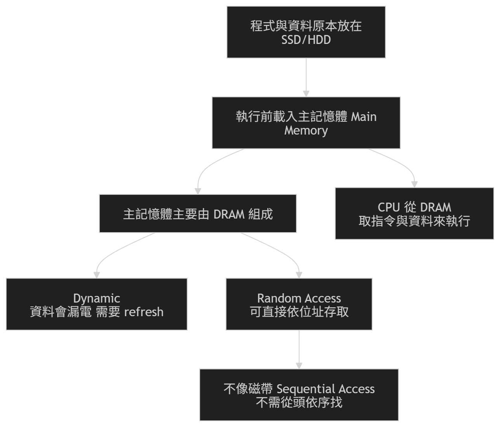
這頁和課程脈絡的關係
這頁其實是在幫後面鋪路：
- 先知道 CPU 很快
- 再知道 主記憶體 DRAM 比 CPU 慢
- 後面才會理解為什麼需要 cache(快取)、為什麼會有 memory hierarchy(記憶體階層)
也就是說，這頁不是只在背名詞， 它是在建立一個很重要的主線：
CPU 要做事 → 需要資料 → 資料先放在 DRAM → 但 DRAM 不夠快 → 所以需要 cache
你可以直接背的考試版答案
DRAM(dynamic random access memory) 是一種主記憶體(main memory) 技術，用來在程式執行時暫時儲存資料與指令。它之所以稱為 dynamic，是因為資料需定期 refresh 才不會遺失；稱為 random access，是因為可依位址直接存取任意位置資料，而不像磁帶必須循序存取。
一句話總結
DRAM 就是電腦執行程式時的主要工作區，容量大、成本低，但需要定期 refresh，且速度比快取慢。
你如果要，我下一則可以直接幫你接著講這頁和 SRAM(靜態隨機存取記憶體) 的差異，並用表格幫你整理到考前好背。
快取記憶體
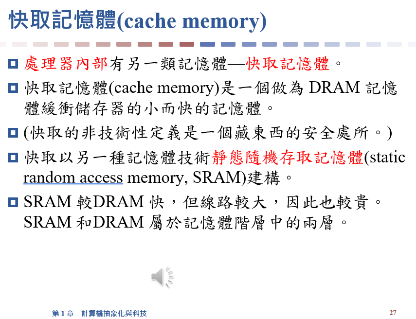
講解
這張圖在講什麼
這張投影片在回答一個核心問題：
為什麼 CPU(中央處理單元) 不直接一直去用 DRAM(動態隨機存取記憶體)，中間還要多一層 cache memory(快取記憶體)？
答案是：
因為 CPU 很快，DRAM 相對慢。 所以我們在 CPU 和 DRAM 之間放一個更小、但更快的記憶體，當作緩衝區，這就是 cache memory(快取記憶體)。投影片內容和課本後面關於 SRAM/DRAM 的整理一致：快取通常使用 SRAM，而主記憶體通常使用 DRAM。 (TechTarget)
先用生活化例子理解
你可以把它想成：
- CPU = 正在做事的人
- cache = 桌面
- DRAM = 書櫃
如果你每做一步都要跑去書櫃拿資料，會很慢。 所以你會把最近常用的資料先放桌上。
這樣：
- 桌面很近，所以拿東西很快
- 但桌面很小，放不了太多東西
- 書櫃很大，但拿東西比較慢
這就是 memory hierarchy(記憶體階層) 的概念： 越靠近 CPU，速度越快、容量越小、成本越高。 (btu.edu.ge)
投影片每一句在說什麼
1.「處理器內部有另一類記憶體──快取記憶體」
意思是：
除了我們平常說的 RAM(主記憶體) 以外，CPU 裡面或很靠近 CPU 的地方，還有一種專門加速用的記憶體，叫 cache memory(快取記憶體)。
它不是拿來大量存資料的，主要是拿來放：
- 最近剛用過的資料
- 很快又可能會再用到的資料
- 常用指令
2.「快取記憶體是做為 DRAM 記憶體緩衝儲存器的小而快的記憶體」
這句最重要。
拆開看：
- 小 (small)：容量不大
- 快 (fast)：存取速度很高
- 緩衝儲存器 (buffer)：幫 CPU 和 DRAM 之間做中介
也就是說，cache 不是要取代 DRAM， 而是要讓 CPU 不用每次都直接碰 DRAM。
3.「快取以 SRAM 建構」
這句是在講技術實作。
快取通常用 SRAM(靜態隨機存取記憶體)。 主記憶體通常用 DRAM(動態隨機存取記憶體)。這也是你這份教材後面幾頁明確寫到的內容。
4.「SRAM 較 DRAM 快，但線路較大，因此也較貴」
這句是在講取捨 (trade-off)。
你可以直接記成：
- SRAM：快、貴、大、容量小
- DRAM：慢、便宜、密度高、容量大
原因很簡單：
- SRAM 為了讓資料保持得更穩、更快讀寫，電路結構比較複雜
- DRAM 每個 bit(位元) 的實作比較省空間，所以能做得更大、比較便宜，但需要刷新(refresh)
因此才會形成現在的分工：
- Cache → SRAM
- Main Memory(主記憶體) → DRAM (purestorage.com)
你最容易考的重點整理
快取記憶體的功能
把 CPU 常用的資料與指令 暫時放在更近的地方，減少到 DRAM 取資料的次數，提升整體效能。(TechTarget)
為什麼快
因為它通常用 SRAM，不需要像 DRAM 那樣持續 refresh(刷新)。 (GeeksforGeeks)
為什麼小
因為 SRAM 面積較大、成本較高，不能像 DRAM 一樣做很大容量。 (purestorage.com)
為什麼不能直接全部都用 SRAM
因為太貴，而且太占晶片面積。 如果整台電腦主記憶體都用 SRAM，成本會非常高，不實際。(btu.edu.ge)
一個你要記住的觀念
很多初學者會誤會：
「快取是不是拿來取代 RAM？」
不是。 比較正確的說法是：
cache 是 RAM 之前的一層高速緩衝。
它的角色不是「取代」，而是「加速」。 像餐廳備料區不是冰箱的替代品，而是讓廚師做菜更快。
和你課程脈絡的關係
這張圖其實是在鋪陳後面很重要的章節：
- 記憶體階層 (memory hierarchy)
- CPU 為什麼會等資料
- cache hit / cache miss
- L1 / L2 / L3 cache
- 為什麼程式區域性 (locality) 很重要
所以這一頁不是只是在背定義， 而是在建立一個大觀念：
電腦效能不是只靠 CPU 主頻，還很依賴資料能不能夠快速送到 CPU。
用圖幫你整理
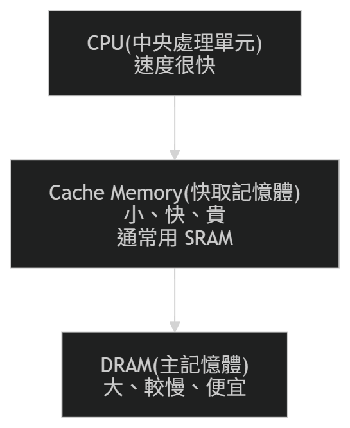
一句話背起來
Cache(快取記憶體) 是用 SRAM 做成的高速小記憶體，放在 CPU 附近，負責暫存常用資料，減少 CPU 直接存取 DRAM 的次數，從而提升效能。
補充修正一下投影片的表述
投影片裡寫：
「快取的非技術性定義是一個藏東西的安全處所」
這句只是英文單字 cache 的字面延伸，不是計算機結構裡真正要考的定義。 考試與理解上，你應該抓技術定義：
cache = 放常用資料、加速存取的高速緩衝記憶體。
你可以怎麼記
直接背這組對照最有效：
- SRAM → 快 → 貴 → 小 → Cache
- DRAM → 慢一些 → 便宜 → 大 → Main Memory
若你要，我下一則可以直接幫你接著講 L1 / L2 / L3 cache 到底差在哪裡，我會用一樣白話的方式講。
Q：暫存器是SRAM嗎，還是其他種
不是完全等同，我們要分兩層看：
結論先講
一般課本語境下，暫存器(register)通常不直接說成 SRAM。 更精確地說：
- 單一暫存器(register) 通常是由 flip-flop(正反器) 或 latch(鎖存器) 組成。(cse.iitk.ac.in)
- SRAM 也是用類似雙穩態(bistable)電路儲存資料，但它通常是做成大規模記憶體陣列(memory array)，常見用途是 cache(快取)。(維基百科)
- 所以在計算機結構裡，最常見的講法是： register 用 flip-flop；cache 用 SRAM；main memory(主記憶體) 用 DRAM。 (cse.iitk.ac.in)
為什麼很多人會搞混
因為 SRAM 本身就是用 flip-flop 類型的儲存概念 來保存位元，所以你會看到有些資料寫：
SRAM 用在 cache 和 high-speed registers
這句話不算完全錯，但對初學者容易混淆。(Lenovo)
更精確的理解是：
- register：偏向 CPU 內部少量、超高速、直接參與運算控制的儲存單元
- SRAM：偏向大量排列成陣列的高速記憶體結構
就像：
- 單一抽屜 = register
- 一整排很多抽屜的櫃子 = SRAM array
兩者都能存東西，但設計目的與組織方式不同。
你在課堂上應該怎麼回答
如果老師問：
「暫存器是 SRAM 嗎？」
你比較穩的回答是：
暫存器通常由 flip-flop(正反器) 組成，不直接稱為 SRAM；而快取記憶體通常用 SRAM 實作。 (cse.iitk.ac.in)
這樣最不容易被挑毛病。
更細一點：那 register file(暫存器檔) 呢？
這裡就要更專業一點。
在實際晶片設計裡，register file(暫存器檔) 有時候會做成比較像 SRAM 的多埠(multi-port)記憶體結構，尤其當容量變大、要節省面積時，有些設計會採用 SRAM-based register file。(Agnisys, Inc.)
但在基礎計算機結構課裡，通常不會這樣教；課堂上通常仍然會把它分成：
- register → flip-flop
- cache → SRAM
- main memory → DRAM
這是最標準、最容易拿分的版本。(cse.iitk.ac.in)
你可以這樣記
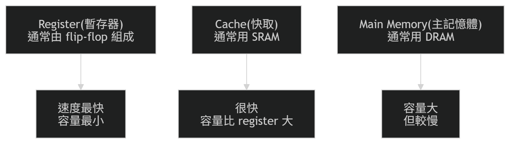
一句話版
暫存器通常不是直接稱作 SRAM，而是由 flip-flop(正反器) 實作；SRAM 則通常拿來做 cache，雖然兩者底層概念相近。
如果你要，我下一則可以直接幫你比較 flip-flop、register、register file、SRAM、cache 五個名詞的差別，這個超容易混。
指令集架構
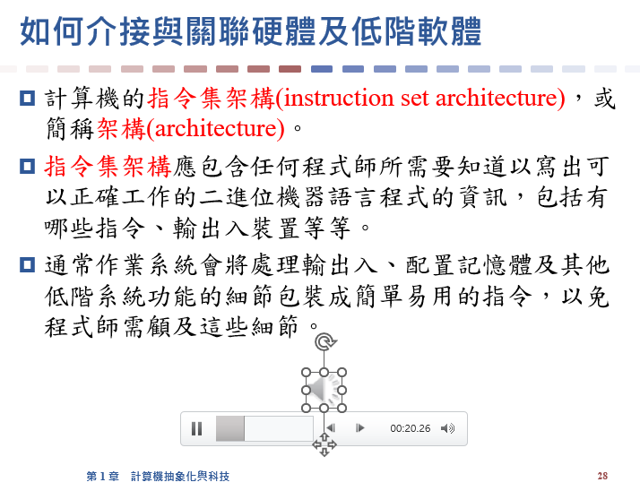
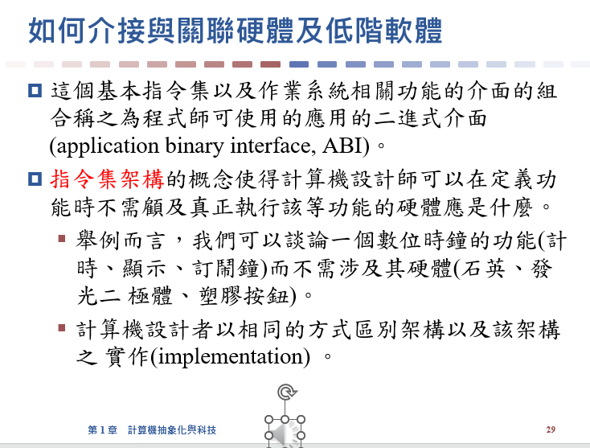
ISA vs ABI
-
ISA：規定 CPU 提供哪些底層機器功能，例如 instruction(指令)、register(暫存器)、addressing mode(定址方式)。
-
ABI：規定 編譯好的程式，要怎麼一致地使用這些功能，例如參數放哪裡、回傳值放哪裡、stack(堆疊) 怎麼排、型別大小怎麼定。
用一句最容易記的版本
-
ISA = 有哪些按鈕可以按
-
ABI = 大家約好按鈕要怎麼按，才不會互相搞錯
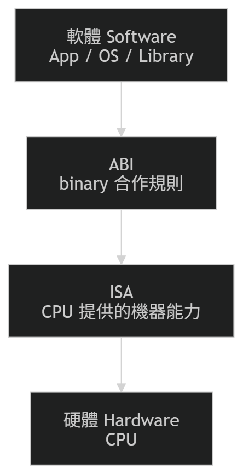
用指令來舉例一下ISA、ABI差異
用指令看最清楚：ISA 管「這條指令是什麼」，ABI 管「用這條指令時，大家怎麼約定」
先直接講一句：
- ISA (Instruction Set Architecture，指令集架構)：定義
mov、add、call、syscall這些 instruction(指令) 是什麼意思，還有rax、rbx這些 register(暫存器) 以及 addressing mode(定址方式) 怎麼用。x64 官方文件也明講它擴充了 x86 的暫存器與 addressing modes(定址模式)，而 Intel 的指令手冊則專門描述處理器的 instruction set(指令集)。 (Microsoft Learn) - ABI (Application Binary Interface，應用程式二進位介面)：定義「參數放哪裡、回傳值放哪裡、stack(堆疊) 怎麼用」，也就是 binary(二進位) 層的合作規則。Microsoft 的 x64 ABI 文件明確說它涵蓋 calling convention(呼叫慣例)、type layout(型別配置)、stack 與 register 使用等內容。 (Microsoft Learn)
例子 1：mov / add 這種，就是 ISA 的範圍
看這段 x64 assembly(組合語言)：
mov rax, [rbx]
add rax, 5
這裡：
mov是「搬資料」的指令add是「加法」的指令rax、rbx是暫存器[rbx]代表用rbx當位址去抓記憶體資料
這些都屬於 ISA，因為它在回答：
CPU 到底認得哪些指令？ 這些指令怎麼解讀？ 暫存器和定址方式有哪些？
Microsoft 的 x64 架構說明甚至直接給了類似例子：mov rax, [rbx] 代表把從 rbx 指向位置開始的 8 bytes 載入到 rax；也提到 x64 新增了 rip-relative addressing(相對於指令指標的定址) 等模式。 (Microsoft Learn)
例子 2：call 還不夠，參數放哪裡才是 ABI
假設你有這個 C：
sum(10, 20, 30, 40, 50);
編譯後一定會有某種 call 指令，但光有 call 還不夠。 還要先決定：
- 第 1 個參數放哪個 register？
- 第 2 個參數放哪裡？
- 第 5 個參數是不是要放 stack？
- 回傳值要去哪裡拿？
這就是 ABI。
在 Windows x64 ABI
前四個整數或指標參數放在：
RCXRDXR8R9
剩下的參數放 stack，整數或指標回傳值放在 RAX。 (Microsoft Learn)
在 System V AMD64 ABI（Linux 常見的 user-space 慣例）
整數參數依序使用：
%rdi%rsi%rdx%rcx%r8%r9
你看，同樣都是 x64 這個 ISA，call 這條指令的意思沒有變，但「參數要放哪裡」這件事可以因 ABI 不同而不同。這正是 ISA 與 ABI 的差異。 (Microsoft Learn)
例子 3：syscall 是最像你直覺的例子
這個例子超好記。
syscall 這條指令本身，屬於 ISA
因為它是 CPU 提供的一條 instruction(指令)。System V AMD64 ABI 文件也把 syscall 列成 AMD64 程式可期待的處理器特性之一。
但「怎麼用 syscall」的細節，屬於 ABI
Linux 的 AMD64 慣例規定：
- system call number(系統呼叫編號) 放在
%rax - 參數放在
%rdi,%rsi,%rdx,%r10,%r8,%r9 - 回傳值放回
%rax syscall之後%rcx和%r11會被破壞
所以：
syscall這條指令存在 → ISA- 用
syscall時，編號和參數塞哪些暫存器 → ABI
這個例子最適合拿來分辨兩者。
你可以這樣背
ISA 在回答
- CPU 有哪些按鈕？
add、mov、call、syscall是什麼？rax、rbx、rip是什麼？[rbx]這種定址怎麼解？
ABI 在回答
- 呼叫函式前，參數放哪？
- 回傳值去哪拿？
- 哪些暫存器呼叫後可以被改？
- stack 要怎麼排？
一張小圖
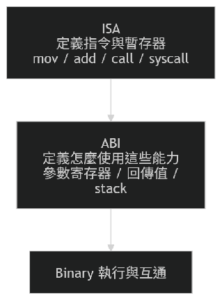
最後用一句話收斂
你看到一條指令時，可以這樣問自己：
- 「這條指令本身是什麼意思？」 → ISA
- 「這條指令執行前後，參數和結果要照什麼規矩放？」 → ABI
所以：
add rax, rbx的「加法語意」是 ISAcall foo前把參數放進哪些 register，是 ABIsyscall這條指令本身是 ISAsyscall的編號與參數要放哪些 register，是 ABI
如果你要，我下一則可以直接幫你畫一張 以 printf(...) 為例 的完整流程圖，從 C 程式一路畫到 ISA 與 ABI。
Q：用C++舉例一個會一個呼叫CPU動作的程式碼，講解ISA、ABI
先修正一句話
嚴格來說，C++ 不是「呼叫 CPU 動作」，而是：
C++ 程式先被 compiler(編譯器) 轉成 machine code(機器碼)，CPU 再去執行那些 instruction(指令)。
所以我們比較精確的說法會是：
用一段 C++，看它最後會變成哪些 CPU 指令，順便分清楚哪些是 ISA、哪些是 ABI。
C++ 範例
先看一個最小、最好懂的例子：
long long add(long long a, long long b) {
return a + b;
}
int main() {
return (int)add(10, 20);
}
這段程式做的事情很單純：
main()呼叫add(10, 20)add()把兩個數字加起來- 結果回傳給
main()
它可能對應成這種 x86-64 組語
以下是簡化示意版，不是保證每個編譯器都逐字一樣，但很適合拿來理解：
main: mov rcx, 10 mov rdx, 20 call add ; 回傳值現在在 rax add: mov rax, rcx add rax, rdx ret
先只看「這段組語在做什麼」
mov rcx, 10
把數值 10 放進 rcx 暫存器。
mov rdx, 20
把數值 20 放進 rdx 暫存器。
call add
跳去執行 add，而且會先保存「等等要回來哪裡」。
mov rax, rcx
在 add 裡，把第一個參數先搬到 rax。
add rax, rdx
把第二個參數加進去。
ret
回到呼叫 add 的地方。
這裡哪個是 ISA？
ISA (Instruction Set Architecture，指令集架構)
ISA 在這個例子裡，管的是：
movaddcallretrax、rcx、rdx這些 register(暫存器)- 指令怎麼解讀、怎麼作用
Intel 官方文件就是把這些內容放在 instruction set reference(指令集參考) 裡；例如 ADD 的定義就是把來源運算元和目的運算元相加，再把結果存回目的地。(英特爾)
另外，Microsoft 的 x64 架構說明也明確提到像 mov rax, [rbx] 這種指令如何搬資料，並指出 jmp、call、push、pop 這類指令在 x64 會隱含使用 instruction pointer(指令指標) 與 stack pointer(堆疊指標)。(Microsoft Learn)
所以在這段程式裡：
mov是 ISAadd是 ISAcall/ret是 ISArax/rcx/rdx是 ISA 提供的暫存器概念
你可以把它想成：
ISA 在回答：CPU 到底有哪些按鈕可以按？每個按鈕按下去會發生什麼事？
這裡哪個是 ABI？
ABI (Application Binary Interface，應用程式二進位介面)
ABI 在這個例子裡，管的是：
- 為什麼第一個參數放
rcx - 為什麼第二個參數放
rdx - 為什麼回傳值放
rax - 呼叫函式前後，哪些暫存器可以被改、哪些要保留
以 Windows x64 ABI 為例，Microsoft 文件明確規定：
- 整數參數會放在
RCX、RDX、R8、R9 - 可放入 64 位的純量回傳值會透過
RAX傳回 RAX、RCX、RDX、R8、R9、R10、R11等屬於 volatile(揮發性) 暫存器，也就是函式呼叫時可以被覆寫 (Microsoft Learn)
所以在這段程式裡：
a放進rcx→ ABIb放進rdx→ ABI- 結果放進
rax→ ABI
你可以把它想成：
ABI 在回答：大家都用同一顆 CPU 時，呼叫函式要照什麼規矩來放參數和拿結果？
為什麼這個例子很好？
因為它剛好能把兩件事完全分開：
同一段程式的「CPU 指令內容」
這是 ISA
例如：
mov的意思是搬資料add的意思是做加法call的意思是呼叫函式ret的意思是返回
同一段程式的「函式呼叫規矩」
這是 ABI
例如：
- 第 1 個參數為何在
rcx - 第 2 個參數為何在
rdx - 為何答案從
rax拿
用一句話拆開
看這段：
mov rcx, 10 mov rdx, 20 call add
從 ISA 角度看
是在問：
mov是什麼指令？call是什麼指令？rcx、rdx是什麼？
從 ABI 角度看
是在問：
- 為什麼
10要放在rcx而不是rbx？ - 為什麼
20要放在rdx？ - 為什麼
add回傳後結果在rax？
一張圖看懂
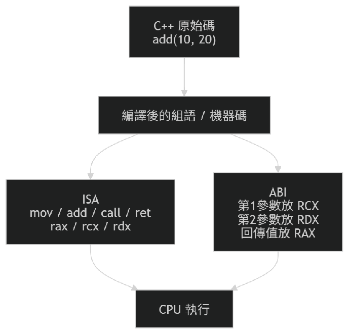
最後幫你濃縮成最好背的版本
這個例子裡：
-
ISA 告訴你
mov、add、call、ret這些指令是什麼，rax、rcx、rdx這些暫存器能怎麼用。(英特爾) -
ABI 告訴你 呼叫
add(a, b)時，a要放RCX，b要放RDX，結果從RAX拿回來。(Microsoft Learn)
你現在可以直接這樣講
ISA 是 CPU 提供哪些指令和暫存器；ABI 是函式呼叫時，參數和回傳值要怎麼放進這些暫存器。
如果你要，我下一則可以直接再幫你做一版更進一步的： 把這段 C++ 拆成「main 呼叫 add 時 stack、register、call、ret 怎麼變化」的逐步流程圖。
資料儲存
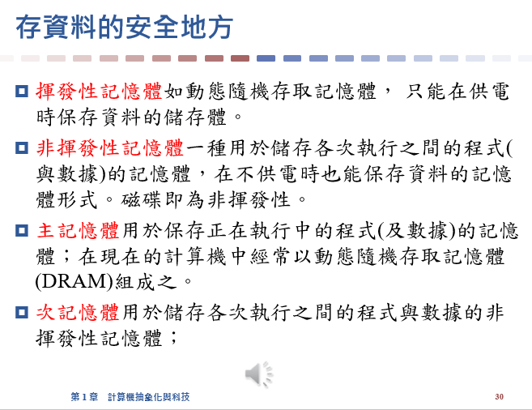
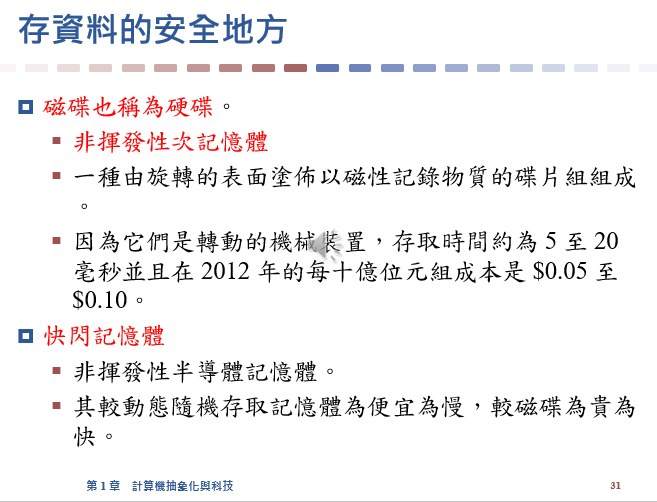
講解
這兩張圖在講什麼
這兩張其實在回答同一個核心問題：
電腦裡的資料，到底該放在「快但會忘記」的地方，還是放在「慢一點但不會忘記」的地方？
你可以先用一句話記：
主記憶體(Main Memory)負責「現在正在做的事」；次記憶體(Secondary Storage)負責「做完之後還要留著的事」。
第一張圖：在分「會不會斷電就忘記」
第一張把儲存體分成兩大類：
1. 揮發性記憶體(Volatile Memory)
意思是：
只要一斷電，資料就沒了。
投影片舉的例子是 DRAM(Dynamic RAM，動態隨機存取記憶體)。這也是一般電腦裡常說的「記憶體條」。課件也明確寫到，主記憶體通常就是用 DRAM 組成。
官方資料也一致：Intel 把 DRAM 描述成電腦的短期工作記憶(short-term working memory)，電源關掉後資料會消失；Samsung 也把 flash memory 與 DRAM/SRAM 對照，指出 DRAM/SRAM 斷電後不保留資料。(英特爾)
你可以把它想成：
- 桌面
- 你現在正在攤開的課本、計算紙、筆記
桌面很好用、拿東西很快，但你一把桌面清空，東西就不在了。
2. 非揮發性記憶體(Non-volatile Memory)
意思是：
就算斷電，資料也還在。
投影片說這類用來保存「各次執行之間」的程式與資料，也就是你關機後，檔案、照片、作業還會留著。
官方資料也一致：Samsung 將 flash memory 定義為斷電後仍能保存資料的半導體記憶體；Intel 也把 non-volatile data 描述為關機後仍會存在的長期資料。(Samsung Semiconductor Global)
你可以把它想成：
- 書櫃 / 倉庫
- 你把檔案收進去，明天再來還在
第一張圖裡最重要的兩個名詞
主記憶體(Main Memory)
這是在講：
CPU 現在工作時直接使用的主要工作區。
投影片寫得很直接：主記憶體用來保存正在執行中的程式與資料，現在的電腦通常用 DRAM 做成。
所以主記憶體不是拿來「長期保存」的，而是拿來「讓 CPU 目前能快速工作」的。
次記憶體(Secondary Storage)
這是在講：
長期保存資料的地方。
投影片說它是用來保存各次執行之間的程式與資料，而且屬於非揮發性。
典型例子就是：
- HDD(Hard Disk Drive，傳統硬碟)
- SSD(Solid State Drive，固態硬碟)
- USB 隨身碟
- 記憶卡
第二張圖：在講「次記憶體裡常見的兩種東西」
第二張是在把非揮發性次記憶體再拆細。
1. 磁碟 / 硬碟(HDD)
投影片這裡說的「磁碟」是傳統 HDD，特徵是：
- 非揮發性
- 用旋轉碟片
- 表面有磁性材料
- 存取速度比主記憶體慢很多
Toshiba 的 HDD 技術資料也指出，HDD 的 recording media(記錄媒體) 是靠磁化方向保存資訊，這和投影片「磁性記錄物質」的說法一致。(news.toshiba.com)
你可以把 HDD 想成：
- 容量大
- 便宜
- 但因為有機械轉動，所以慢一些
2. 快閃記憶體(Flash Memory)
投影片把快閃記憶體列成：
- 非揮發性
- 半導體記憶體
- 比 DRAM 慢，但比磁碟快
Samsung 的半導體字典也把 flash memory 定義成：斷電後仍保存資料的 non-volatile memory，常用於手機、USB drive、儲存裝置。(Samsung Semiconductor Global)
常見的 flash-based 裝置有：
- SSD
- USB 隨身碟
- 記憶卡
- 手機內部儲存
這兩張圖合起來，你要記成這樣
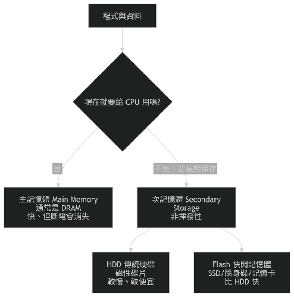
最容易搞混的地方
1. 「記憶體」和「儲存裝置」不是同一件事
日常講話常把它們混在一起，但在計算機結構裡要分很清楚：
- RAM / DRAM → 主記憶體
- HDD / SSD / USB → 次記憶體
也就是說：
RAM 不是拿來長期存檔的。 SSD/HDD 也不是 CPU 當下最主要的工作桌面。
2. 程式平常放在硬碟/SSD，但執行時通常要進 RAM
這點你的課件其實也有寫到：電腦執行軟體前，首先要把可執行碼載入主記憶體。
生活化一點講：
- 你的作業檔平常放在 SSD/HDD
- 你一打開 Word
- 作業內容和程式的一部分會被載入 RAM
- CPU 才能快速處理
所以：
硬碟/SSD 像倉庫，RAM 像工作桌。
3. 「非揮發性」不等於「不能改」
這也很常被混淆。
- Volatile / Non-volatile 講的是：斷電後資料在不在
- Read-only / Writable 講的是：能不能寫入修改
例如：
- Flash memory 是 非揮發性，但可以寫入
- ROM(Read Only Memory) 是非揮發性，而且通常不拿來當一般可寫工作區
這點從 Samsung 對 ROM 與 flash 的定義也能看出來：ROM 與 flash 都屬於 non-volatile，但用途和可改寫方式不同。(Samsung Semiconductor Global)
我幫你濃縮成考試版
一句話版
- 主記憶體 = 快、給 CPU 現在用、通常是 DRAM、斷電會忘
- 次記憶體 = 慢一些、拿來長存、斷電不會忘，像 HDD/SSD/隨身碟
二句話版
- CPU 執行程式時，主要在 主記憶體(Main Memory) 上工作。
- 想讓資料關機後還在，就要放到 非揮發性的次記憶體(Secondary Storage)。
補一個小修正
第二張投影片把「磁碟也稱為硬碟」放在一起講，在這門課的入門語境可以這樣理解；但若講得更精確：
- HDD 是磁性旋轉碟片的硬碟
- SSD 雖然中文常叫「固態硬碟」，但底層是 flash memory，不是磁性碟片 (news.toshiba.com)
所以現代人講「硬碟」時，日常口語有時會把 HDD、SSD 都算進去；但在結構原理上，兩者技術不同。
社群上常見的卡點
很多人在討論區第一次學這段時，最容易卡在這句：
「既然 SSD 很快，為什麼它不能直接當 RAM？」
因為「快不快」不是唯一條件，還有：
- CPU 存取方式
- 延遲(latency)
- 匯流排(bus)連接方式
- 寫入特性與耐久度
- 在記憶體階層(memory hierarchy)中的角色
Intel 也明確區分：DRAM 是 volatile 的系統工作記憶；像 Optane 這類 non-volatile 媒體即使能加速存取，也不是直接取代一般 DIMM/DRAM RAM 插槽用途。(英特爾)
記憶體
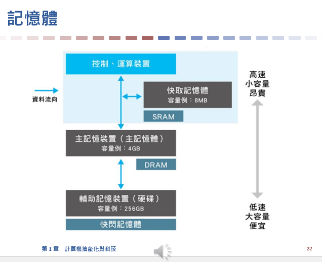
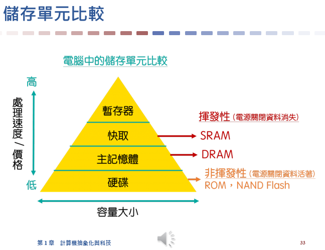
Q：SRAM 和 DRAM 是揮發性？都需要更新嗎？
SRAM 和 DRAM 都需要持續供電，但是 DRAM 如果不做更新(refresh)，資料會因電荷流失而慢慢消失；SRAM 則不需要這種更新。
| 項目 | SRAM | DRAM |
|---|---|---|
| 全名 | Static RAM(靜態隨機存取記憶體) | Dynamic RAM(動態隨機存取記憶體) |
| 是否為揮發性記憶體 | 是 | 是 |
| 是否需要持續供電 | 是 | 是 |
| 是否需要週期性更新(refresh，刷新/更新) | 不需要 | 需要 |
| 資料如何保存 | 用 flip-flop(正反器)／latching circuitry(鎖存電路) 維持狀態 | 用 capacitor(電容) 儲存電荷 |
| 為何需要 refresh | 不需要靠 refresh 維持資料 | 因為電容電荷會慢慢流失 |
| 斷電後資料是否保留 | 不保留 | 不保留 |
| 常見用途 | cache(快取) | main memory(主記憶體) |
液晶顯示器
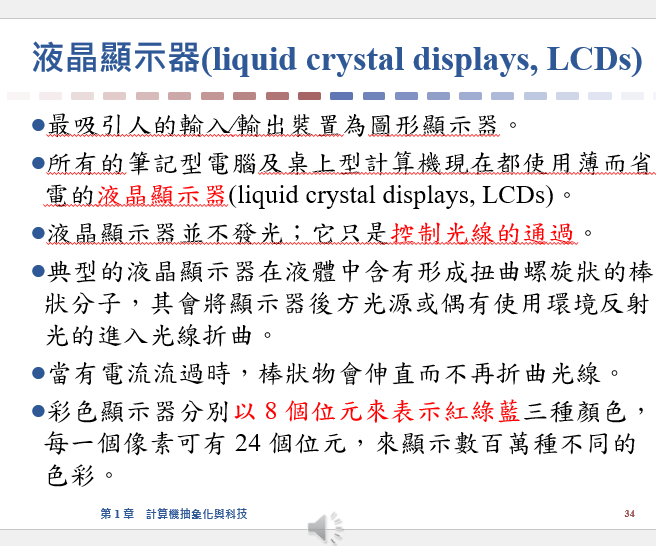
解釋
這張投影片的重點
-
LCD(liquid crystal display，液晶顯示器) 是很常見的螢幕 現在筆電、桌機螢幕大多都用 LCD。
-
LCD 本身不會發光 它不是自己「亮起來」，而是控制光線能不能通過，所以後面通常要有背光(backlight，背光源)或靠外界光。
-
液晶分子會改變光的通過方式 沒通電時，液晶分子的排列會讓光線偏轉； 通電後，排列改變，光線通過的方式也跟著改變。 你可以把它想成： 液晶像一個很細的「光線開關 / 調節閥」。
-
畫面是很多像素(pixel，像素)組成的 螢幕上的每個小點都能控制亮暗與顏色，很多很多像素合在一起，就變成我們看到的圖片。
-
彩色是由紅綠藍 RGB 組成 一個彩色像素通常用 紅(Red)、綠(Green)、藍(Blue) 三種基本顏色混合出來。 投影片提到每種顏色可用 8 位元(bit) 表示，所以總共是： 8 + 8 + 8 = 24 位元 也就是常說的 24-bit color(24 位元彩色)，可以表示很多種顏色。
一句話記法
LCD 不自己發光，而是靠液晶分子去控制光線通過，再用 RGB 像素組成彩色畫面。
你若要，我也可以幫你把這頁整理成 3 行超短版考前背誦重點。
觸控螢幕
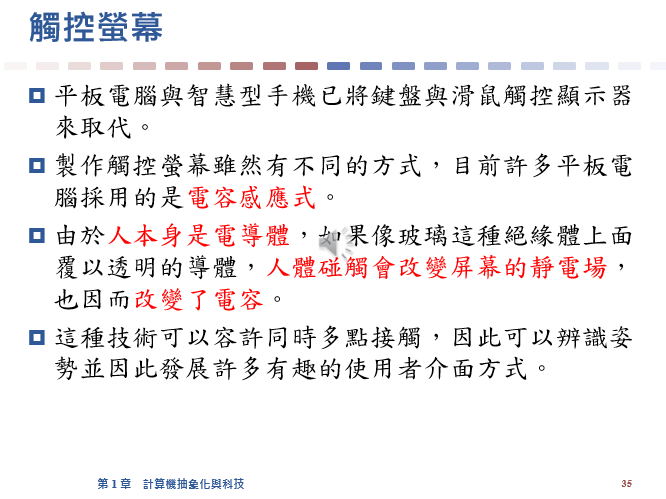
這頁的重點
-
現在很多裝置用觸控螢幕取代鍵盤和滑鼠 像平板、智慧型手機，主要就是直接用手碰螢幕操作。
-
常見的是電容式觸控(capacitive touch，電容式觸控) 目前很多平板和手機都採用這種方式。
-
為什麼手碰得到？ 因為人體可以導電。 當手指碰到螢幕時，會改變螢幕表面的電場(electric field，電場)，也會讓電容(capacitance，電容) 改變。
-
系統就是靠這個變化知道你點了哪裡 也就是說，螢幕不是「感覺到你的手指壓下去」，而是偵測電容變化。
-
可以支援多點觸控(multi-touch，多點觸控) 所以不只可以點一下，也能兩指縮放、旋轉、滑動。
一句話記法
電容式觸控螢幕是利用手指改變螢幕電場與電容，來判斷你碰的位置，還能支援多點觸控。
很容易考的觀念
很多人會以為觸控螢幕是靠「壓力」感應，但這頁講的重點其實是： 電容式觸控主要靠電性變化，不是靠單純壓下去。
如果你要，我可以再幫你把這頁和上一頁 LCD 整理成一張對照表。
Q：電容是啥
電容(capacitance) 是什麼？
最簡單地說：
電容就是「一個系統有多容易把電荷(charge，電荷)分開存起來」的能力。 它也可以理解成：在一定電壓(voltage，電壓)下，能存多少電荷。 數學上常寫成 C = Q / V，也就是電容 = 電荷 ÷ 電壓。(Encyclopedia Britannica)
用生活化方式想
你可以把它想成一個「裝電的容器」：
- Q(charge，電荷)：像裝進去的水量
- V(voltage，電壓)：像把水擠進去需要的壓力
- C(capacitance，電容)：像這個容器有多好裝
所以：
- 電容大 → 同樣電壓下，可以存比較多電荷
- 電容小 → 存一點電荷，電壓就升很快。(Physics LibreTexts)
它和電容器(capacitor，電容器)的關係
- 電容(capacitance) 是一種「能力、性質」
- 電容器(capacitor) 是實際的元件
就像：
- 容量 是性質
- 杯子 是物體
電容器會把正負電荷分別存到兩端，並把能量儲存在電場(electric field，電場) 裡。(Encyclopedia Britannica)
單位是什麼？
電容的 SI 單位是 farad(F，法拉)，而且 1 farad = 1 coulomb per volt = 1 C/V。(超物理學)
為什麼觸控螢幕會提到電容？
因為電容式觸控(capacitive touch，電容式觸控)就是在測「電容有沒有變」。 你的手指碰到螢幕時，會改變螢幕表面的電場分布，因此讓某些位置的電容改變，系統就知道你碰了哪裡。這也是你剛剛那頁投影片在講的核心。這裡我是在根據電容的物理定義，連回觸控螢幕的工作原理做推論。(Encyclopedia Britannica)
一句話記
電容不是「有沒有電」，而是「存電荷的能力有多大」。
你現在先這樣記就夠了
- 電荷：像電子帶來的電
- 電壓：推動電荷分開的力量
- 電容：在這種推動下，能存多少電荷
若你要，我下一步可以直接用 「兩片金屬板」 畫圖講一次，讓你秒懂為什麼手指碰一下，螢幕的電容就會變。
記憶體技術
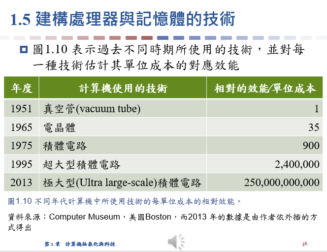
講解
好，之後我先都用簡單講解。
這頁重點只有一個：
電腦技術一直進步，所以「同樣成本下能做到的效能」越來越高。
你可以直接這樣看表：
- 1951：真空管(vacuum tube，真空管) → 效能最低
- 1965：電晶體(transistor，電晶體) → 比真空管好很多
- 1975：積體電路(integrated circuit, IC，積體電路) → 又大幅提升
- 1995：超大型積體電路(VLSI, very-large-scale integration，超大型積體電路) → 效能暴增
- 2013：極大型積體電路(ultra large-scale integration，極大型積體電路) → 更強非常多
表格右邊的意思不是單純「速度變幾倍」，而是：
每單位成本(cost)可以買到的效能(performance)提升很多很多。
也就是說：
- 技術越新
- 元件越小
- 能塞進去的電路越多
- 成本效益(performance/cost，效能/成本)就越高
這和半導體技術、積體電路密度持續提高的歷史趨勢一致，也就是我們常會連到 Moore's Law(摩爾定律) 這種概念。(Encyclopedia Britannica)
一句話記法
從真空管 → 電晶體 → 積體電路 → VLSI，代表電腦技術越來越進步，所以同樣成本下的效能越來越高。
你現在先抓住的考點
這頁主要不是要你背數字， 而是要你知道：
建構處理器與記憶體的技術演進，會直接帶來效能提升與成本下降。
晶圓
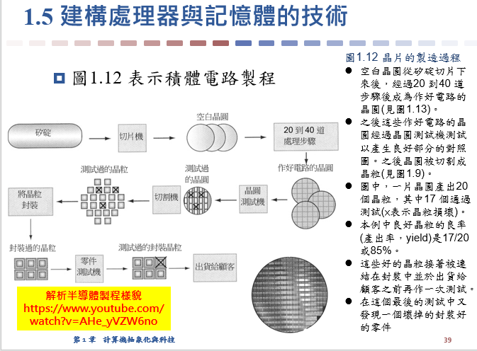
Q：簡單講解良率是啥
良率(yield) 是什麼？
良率就是：做出來的產品裡面，有多少比例是「好的、能正常用的」。
最簡單的公式：
良率 = 良品數 ÷ 總生產數
例如：
- 做了 100 顆晶片
- 其中 85 顆正常
- 那良率就是 85%
這和半導體製造常見的定義一致：yield 通常就是晶圓上或整個製程中，可正常工作的晶片所占比例。(ASML)
放到這張投影片裡怎麼看？
投影片寫：
- 一片晶圓可能切出很多顆晶片
- 但不是每一顆都一定成功
- 有些會因為製程缺陷(defect，缺陷)壞掉
- 最後通過測試、能封裝出貨的比例，就是良率
所以這頁的 yield 17/20 或 85%，意思就是：
- 原本有 20 顆
- 其中 17 顆是好的
- 所以良率 = 17 ÷ 20 = 85%
你可以把它想成
像考試一樣：
- 全班 20 個人做作品
- 最後有 17 個作品合格
- 那這次作品的「合格率」就是 85%
在晶片工廠裡，這個「合格率」就是良率(yield)。
為什麼良率很重要？
因為：
- 良率高 → 壞掉的少 → 成本比較低
- 良率低 → 壞掉的多 → 很浪費
所以半導體製造很重視提高良率；良率提升，通常代表能交付更多正常晶片、減少報廢(scrap，報廢)並降低成本。(Semiconductor Engineering)
一句話記法
良率就是「做出來的產品中，有幾成是合格可用的」。
效能
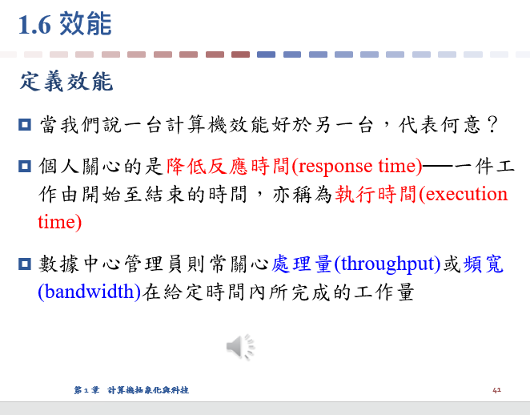
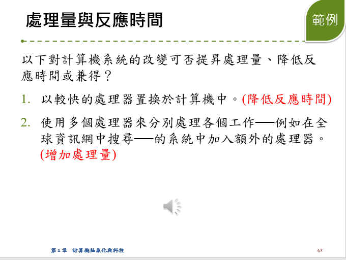
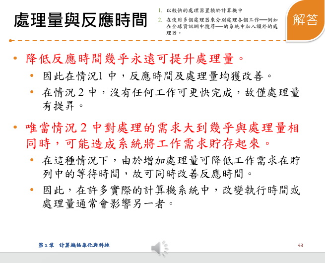
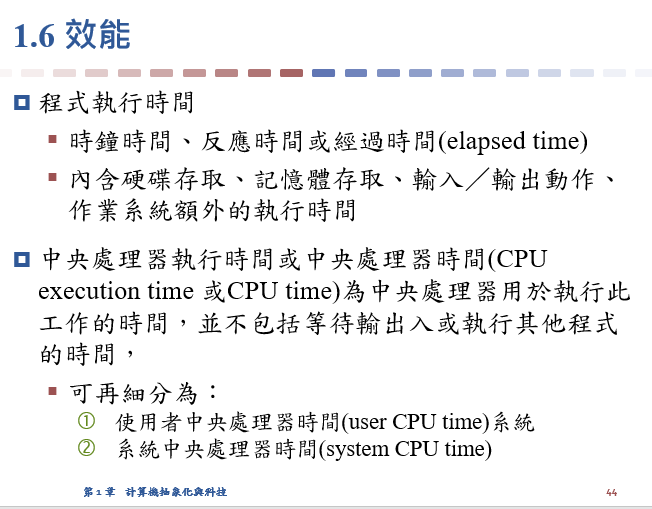
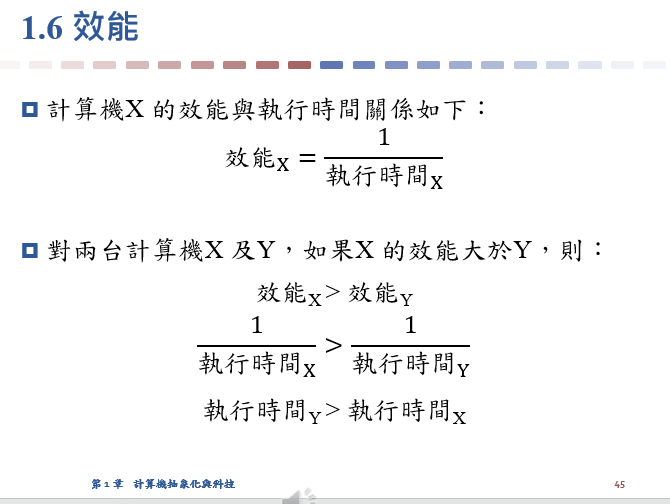
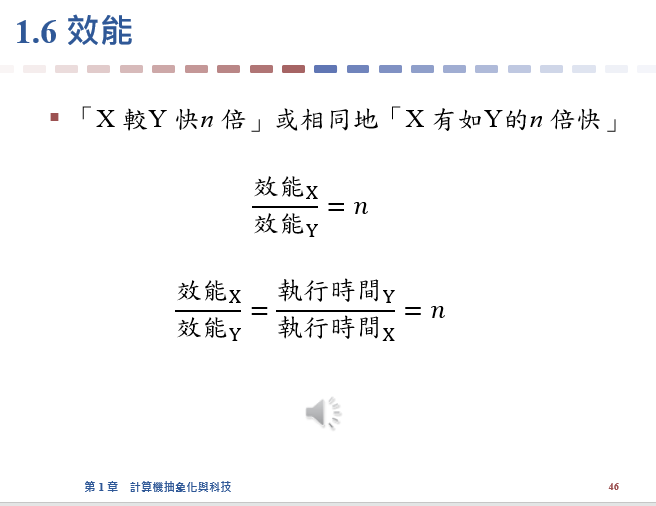
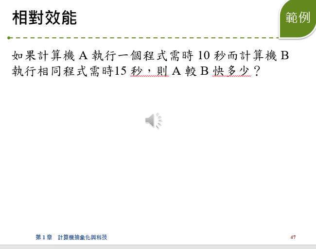
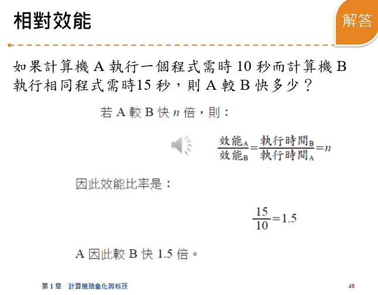
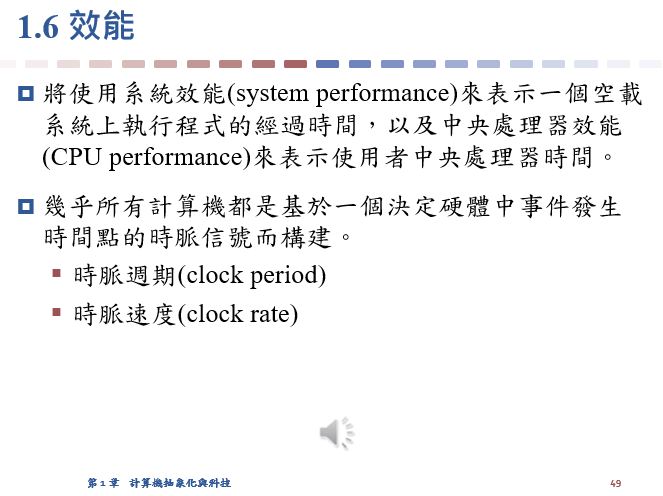
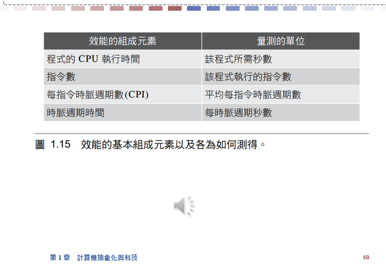
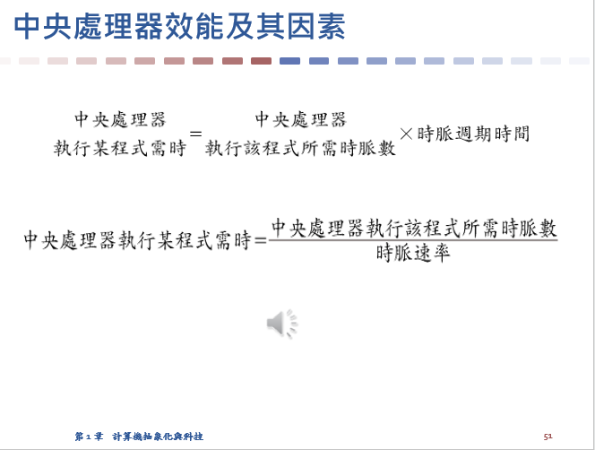
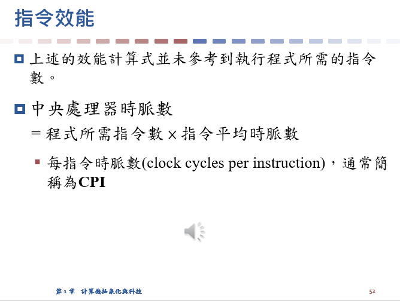
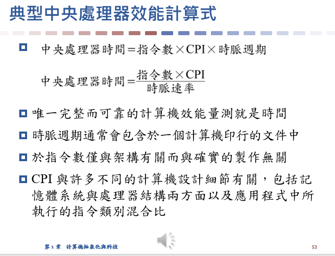
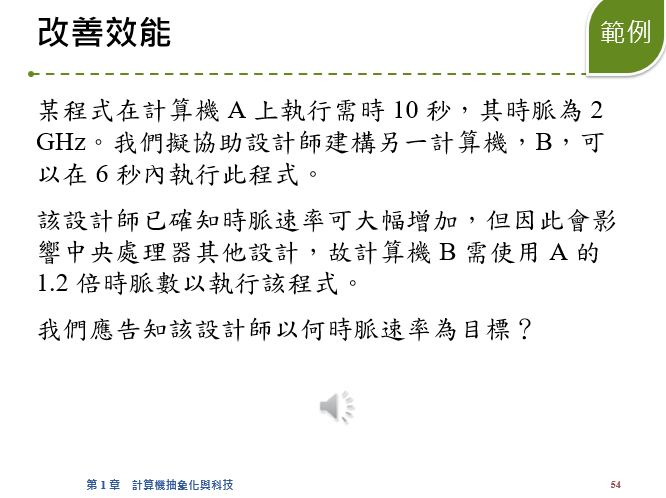
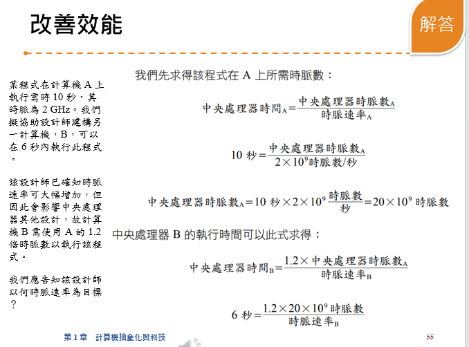
(答案是 4 GHz)
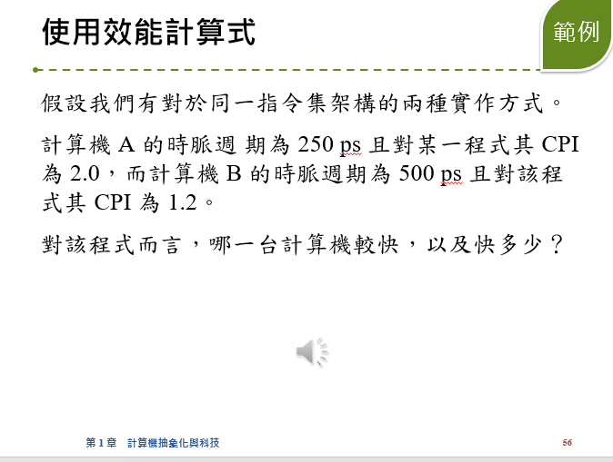
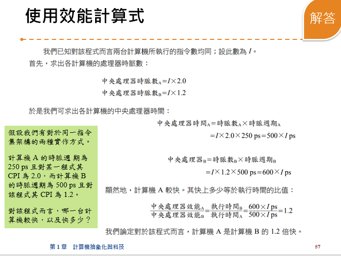
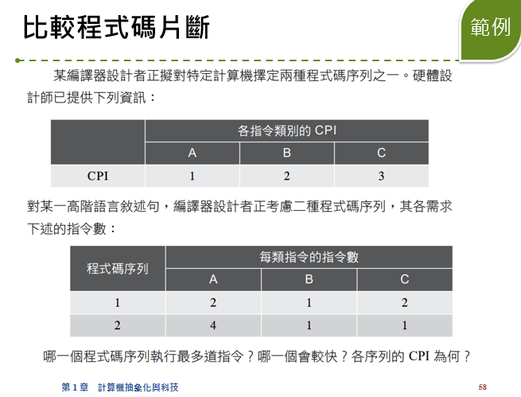
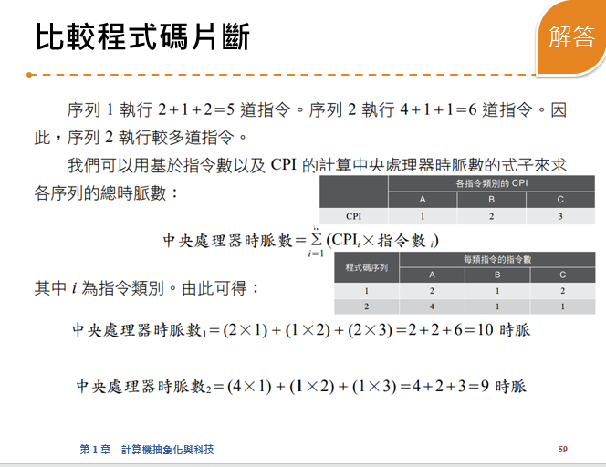
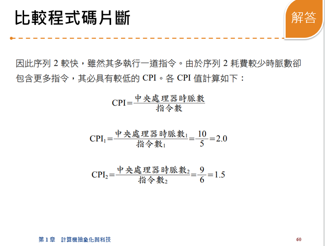
⭐重點
先說一個總觀念
我先依你這組投影片的脈絡整理，所以這是課內版本。有些名詞在業界會再分得更細，但你現在先把這一章的主線抓穩最重要： 效能看的是時間與工作量，不是只看 GHz。 這也是 Berkeley 的經典架構課在教效能時的核心框架：如果我們關心單一工作的快慢，就看 response time / execution time；如果關心單位時間做多少工作，就看 throughput / bandwidth。
專業名詞整理
0. 中央處理器
就是指 CPU
中央處理器(Central Processing Unit, CPU，中央處理器)
1. Performance(效能)
整體來說就是「電腦做事有多快、多有效率」。 在這章裡，若我們主要關心一個工作多久做完，就可以把效能理解成：
Performance = 1 / Execution Time
也就是說，執行時間越短，效能越高。
2. System Performance(系統效能)
看的是整個系統完成一個程式或工作時的表現。 它比較接近你投影片裡講的「從開始到結束」的角度，也就是會把 CPU 以外的等待、I/O(input/output，輸入輸出) 等因素一起考慮進去。投影片把這件事放在 elapsed time(經過時間) 的脈絡裡理解是合理的；Oracle 也把 wall-clock time(牆鐘時間) 視為這種外在經過時間。(Oracle Docs)
3. CPU Performance(CPU 效能)
看的是 CPU 真正花在執行這個程式上的時間，不把等待 I/O 或其他程式插進來的時間算進去。這通常就是 CPU time(CPU 時間) 的脈絡。(EECS Berkeley)
4. Elapsed Time(經過時間) / Wall-clock Time(牆鐘時間)
就是你拿碼表從程式開始按，到程式結束停下來的時間。 它會包含 CPU 運算，也可能包含等待磁碟、網路、I/O、作業系統排程等等待時間。Oracle 文件把 wall time 明確稱為通常的 wall-clock time；Ask TOM 也明講 elapsed time 會包含 CPU time 加上 waits。(Oracle Docs)
5. Response Time(反應時間)
完成一個工作所需的時間。 在這章裡，它常和 Execution Time(執行時間)、有時也和 Latency(延遲) 放在同一類概念來理解，也就是「一件事多久完成」。
6. Execution Time(執行時間)
程式或任務從開始到完成所花的時間。 在 Berkeley 架構課裡，response time、execution time、latency 常被放在同一組概念來講。(EECS Berkeley)
7. Latency(延遲)
比較偏工程語感的說法，意思也是「完成一件事要多久」。 你這組投影片主要用的是 response time / execution time，但如果之後課本或別的資料看到 latency，先把它當成同一掛即可。(EECS Berkeley)
8. Throughput(處理量)
單位時間內完成多少工作。 例如一台伺服器每秒能處理幾筆請求，這就是 throughput。Berkeley 課程直接把 throughput 定義成 tasks completed per unit time。(EECS Berkeley)
9. Bandwidth(頻寬)
在你這章投影片裡，bandwidth 幾乎是跟 throughput 放在一起講，都是「單位時間能做多少」。 但你要知道，更嚴格地說，bandwidth 常偏向「最大傳輸能力」，throughput 常偏向「實際完成量」。這章先把它們視為近似同義就夠了。
10. User CPU Time(使用者 CPU 時間)
程式在 user mode(使用者模式) 下，真正佔用 CPU 執行的時間。 Linux 手冊和 Oracle 文件都把它定義成在 user mode 跑在 CPU 上的時間。(man7.org)
11. System CPU Time(系統 CPU 時間)
程式在 kernel mode(核心模式 / 系統模式) 下，由作業系統代它做事時用掉的 CPU 時間，例如 system call(系統呼叫)。(man7.org)
12. CPU Time(CPU 時間)
就是 CPU 真正在工作、替這個程式執行的時間。 它常被拆成：
- user CPU time
- system CPU time
也就是：
CPU time = user CPU time + system CPU time。(EECS Berkeley)
13. Clock Signal(時脈訊號)
數位電路的「節拍器」。 電腦硬體靠這個規律訊號來決定什麼時候更新狀態、做下一步。你這組投影片後面所有 clock period、clock rate、CPI 幾乎都建立在這個概念上。(EECS Berkeley)
14. Clock Cycle(時脈週期 / 時脈循環)
時脈的一次循環，也可想成一次 tick(滴答)。 CPU 不是「每個指令都一定只花一個 cycle」，有些指令可能一個 cycle 做完，有些會花很多個 cycle。Intel 也明講：有時一個週期可完成多個指令，有時一個指令要跨多個週期。(Intel)
15. Clock Period / Clock Cycle Time(時脈週期時間)
一個時脈週期有多長，例如 250 ps(picoseconds，皮秒)。 它和 clock rate 是倒數關係。(EECS Berkeley)
16. Clock Rate / Clock Speed / Frequency(時脈速度 / 時脈頻率)
每秒有多少個 clock cycle。 常見單位是 Hz、MHz、GHz。Intel 的定義就是 cycles per second，GHz 代表每秒十億個 cycles。(Intel)
17. Inverse Relationship(倒數關係)
這是在講：
Clock Rate = 1 / Clock Period Clock Period = 1 / Clock Rate
所以頻率越高，單一週期越短。(EECS Berkeley)
18. Instruction Count, IC(指令數)
一個程式執行時，總共跑了多少條指令。 注意是「實際執行的指令總數」，不是原始碼幾行。(EECS Berkeley)
19. 中央處理器時脈數 Clock Cycles for a Program(程式所需時脈數)
某個程式跑完總共用了多少 clock cycles。 投影片中的「中央處理器時脈數」講的就是這個概念。(EECS Berkeley)
20. CPI(Cycles Per Instruction，每指令平均時脈週期數)
平均來說，一條指令要花幾個 cycle。 公式是：
CPI = Clock Cycles / Instruction Count。Berkeley 的課件也是這樣定義。(EECS Berkeley)
21. Instruction Class(指令類別)
不同類型的指令，可能有不同的 CPI。 例如投影片範例中的 A、B、C 三種指令類別，就是在說： 不是所有指令成本都一樣。(EECS Berkeley)
22. CPU Performance Equation(CPU 效能計算式)
這是這一章最重要的公式：
CPU Time = Instruction Count × CPI × Clock Cycle Time
因為 Clock Cycle Time = 1 / Clock Rate，所以也可寫成：
CPU Time = (Instruction Count × CPI) / Clock Rate。(EECS Berkeley)
23. Relative Performance(相對效能)
拿兩台機器互相比較快慢。 如果 X 比 Y 快 n 倍，則：
Performance(X) / Performance(Y) = n 也等於 Execution Time(Y) / Execution Time(X) = n。
24. “n Times Faster”(快 n 倍)
這個很容易算反。 如果 A 跑 10 秒、B 跑 15 秒，則：
A 比 B 快 15 / 10 = 1.5 倍
不是用 10/15。因為快慢比要用對方時間除以自己時間。
25. GHz / MHz / ps
- GHz(gigahertz，GHz)：每秒十億個週期
- MHz(megahertz，MHz)：每秒一百萬個週期
- ps(picoseconds，皮秒)：10^-12 秒，常用來表示很短的 clock period。(EECS Berkeley)
這章最重要的關係圖
下面這張圖，就是你這幾頁投影片真正的主線：
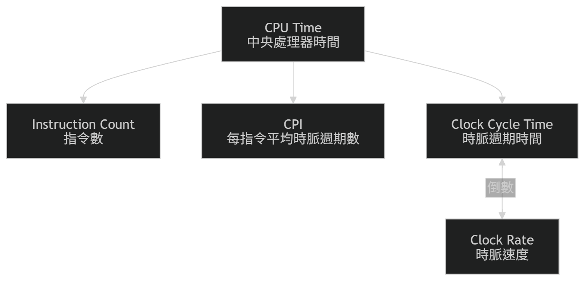
這個關係對應的正式公式就是 CPU Time = Instruction Count × CPI × Clock Cycle Time，以及 Clock Rate = 1 / Clock Period。(EECS Berkeley)
幫你整理重點
重點 1：不要只看 GHz
時脈速度(clock rate) 很重要，但不是唯一答案。Intel 也直接提醒：不同 CPU 設計處理指令的方法不同，所以不能只用 clock speed 判斷全部效能。(Intel)
重點 2：評估「快不快」要先問你在看哪一種快
如果你在乎的是「這個程式多久跑完」，看的是 response time / execution time。 如果你在乎的是「一秒能做多少件事」，看的是 throughput / bandwidth。這兩者不一定同時一起變好。
重點 3：CPU time 和 elapsed time 不一樣
- Elapsed time：整體碼表時間，含等待
- CPU time：CPU 真正在幫你跑的時間
- CPU time = user CPU time + system CPU time。(asktom.oracle.com)
重點 4：這章核心公式一定要背
CPU Time = Instruction Count × CPI × Clock Cycle Time 這代表要讓程式更快，有三個方向：
- 降低指令數
- 降低 CPI
- 降低 clock cycle time（也就是提高 clock rate）(EECS Berkeley)
重點 5：CPI 低，不一定就一定比較快
這是學生最常卡的點。 因為真正決定 CPU time 的是 Instruction Count、CPI、Clock Cycle Time 三者相乘。某個設計雖然 CPI 比較低，但如果它指令數變多，或 clock period 變長，最後還是可能比較慢。這也是你後面「比較程式碼片斷」那幾頁在示範的核心思路。(EECS Berkeley)
重點 6：比較兩段程式碼，不能只看「誰指令少」
你要看的是：
總 clock cycles = Σ(每類指令數 × 該類 CPI)
所以某段程式雖然指令比較多，但如果用到更多低 CPI 的指令，最後總 cycles 反而可能更少，因此更快。這正是你投影片中序列 2 比序列 1 快的原因。(EECS Berkeley)
重點 7：相對效能很容易算反
如果題目問「A 比 B 快幾倍」，你就用：
Execution Time(B) / Execution Time(A)
誰比較快，誰放分母。
你現在最該背的 4 句話
- Performance 跟 time 成反比。
- CPU Time = Instruction Count × CPI × Clock Cycle Time。
- Clock Rate = 1 / Clock Period。
- 比較快慢不能只看 GHz，也不能只看 CPI，要看整個公式。
如果你要，我下一則可以直接幫你把這幾頁整理成一份「考前速記版」，只留公式、陷阱、和最常考的題型。
⭐例題
可以，以下我把你剛剛那幾張投影片中的例題，整理成「題目＋解答」版本，方便你之後直接複習或抄筆記。
這些題目的核心都建立在同一組公式上：
- CPU Time = Instruction Count × CPI × Clock Cycle Time
- CPU Time = Clock Cycles / Clock Rate
- Performance ∝ 1 / Execution Time
這些都是經典的計算機結構效能公式。(EECS Berkeley)
題目 1：相對效能(Relative Performance，相對效能)
題目： 如果計算機 A 執行一個程式需時 10 秒，而計算機 B 執行相同程式需時 15 秒，則 A 比 B 快幾倍？
解答：
相對效能公式：
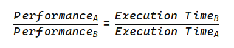
代入數值：
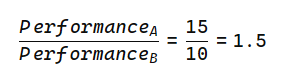
答案：A 比 B 快 1.5 倍。
題目 2：使用效能計算式(Performance Equation，效能計算式)
題目： 假設我們有對於同一個 ISA(instruction set architecture，指令集架構) 的兩種實作方式。
- 計算機 A 的 clock cycle time(時脈週期) 為 250 ps
- 計算機 A 對某程式的 CPI 為 2.0
- 計算機 B 的 clock cycle time 為 500 ps
- 計算機 B 對同一程式的 CPI 為 1.2
問：哪一台計算機較快？快多少？
解答：
設該程式的 instruction count(指令數) 為 (I)
CPU 時間公式：
計算 A 的 CPU 時間
計算 B 的 CPU 時間
因為：
所以 A 比 B 快。
快多少倍：
答案：計算機 A 較快，且 A 是 B 的 1.2 倍快。
題目 3：改善效能(Improving Performance，改善效能)
題目： 某程式在計算機 A 上執行需時 10 秒，其 clock rate(時脈速度) 為 2 GHz。 現在要設計另一台計算機 B，希望它可以在 6 秒 內執行相同程式。
已知因為設計改變，B 執行該程式時需要 A 的 1.2 倍 clock cycles(時脈數)。
問：計算機 B 的目標 clock rate 應該是多少？
解答：
先算 A 的總時脈數：
代入：
所以：
B 需要 1.2 倍時脈數，所以：
又因為 B 要在 6 秒內完成：
所以：
答案：計算機 B 的目標時脈速度為 4 GHz。
題目 4：比較程式碼片斷(Comparing Code Segments，比較程式碼片段)
題目： 某硬體設計提供三種指令類別，其 CPI 如下：
| 指令類別 | A | B | C |
|---|---|---|---|
| CPI | 1 | 2 | 3 |
現在有兩種程式碼序列，其各類指令數如下：
| 程式碼序列 | A | B | C |
|---|---|---|---|
| 1 | 2 | 1 | 2 |
| 2 | 4 | 1 | 1 |
問：
- 哪一個程式碼序列執行較多條指令？
- 哪一個程式碼序列較快？
- 各序列的 CPI 為何？
解答：
第 1 問：比較指令總數
序列 1：
序列 2：
答案：序列 2 執行較多條指令。
第 2 問：計算總 clock cycles
公式：
序列 1
序列 2
因為 9 \< 10，所以：
答案：序列 2 較快。
第 3 問：計算 CPI
CPI 公式：
序列 1
序列 2
答案：
- 序列 1 的 CPI = 2.0
- 序列 2 的 CPI = 1.5
題目 5：時脈頻率與指令執行時間
題目： 某處理器的 clock rate(時脈頻率) 為 100 MHz，假設執行 1 個指令需要 3 個時脈(clock cycles，時脈週期)，則執行該指令需要多少時間？
選項： (A) 0.3 ns (B) 3 ns (C) 30 ns (D) 300 ns
解答：
先求 clock period(時脈週期時間)：
已知：
所以：
表示 1 個時脈週期 = 10 ns
題目說 1 個指令需要 3 個時脈，因此：
答案： (C) 30 ns
幫你整理成超短版重點
這幾題其實都在考同一件事
- 效能和時間成反比
- CPU Time 不只看 clock rate
- 還要一起看 instruction count、CPI、clock cycle time
- 指令比較多，不一定比較慢
- CPI 比較低，也不一定就一定比較快
你最該背的公式
公式裡各英文單字翻譯
-
CPU Time：中央處理器時間
-
Instruction Count：指令數
-
CPI (Cycles Per Instruction)：每指令平均時脈週期數
-
Clock Cycle Time：時脈週期時間
-
Clock Cycles：時脈數／時脈週期數
-
Clock Rate：時脈速度／時脈頻率
-
Performance：效能
-
Execution Time：執行時間